進度 0%
Ch17 — 圖神經網路核心原理與架構（Graph Neural Networks）
從圖傅立葉轉換、ChebNet、GCN 一階近似、訊息傳遞聚合到圖注意力（GAT）與圖變分自編碼器（VGAE）
章節導覽
1 圖神經網路概念、結構化圖資料與三大預測任務（Introduction to Graph Neural Networks & Graph Tasks） 2.1 圖拉普拉斯矩陣與正規化形式（Graph Laplacian & Normalized Laplacian Matrix） 2.2 圖傅立葉轉換與特徵基底投影（Graph Fourier Transform & Eigen-decomposition Basis） 2.3 頻譜圖卷積與對角濾波器（Spectral Graph Convolution & Diagonal Filters） 3 切比雪夫多項式近似與 ChebNet 頻譜卷積（ChebNet: Chebyshev Polynomial Approximation） 4 圖卷積網路（GCN）一階近似與自環正規化（Graph Convolutional Networks & Self-Loop Renormalization） 5.1 空間聚合通用框架：Sum, Mean 與對稱正規化 Pooling（General Spatial Message Passing & Pooling Frameworks） 5.2 圖機器學習三大下游任務：節點、圖與邊預測（Node, Graph & Link Machine Learning Tasks） 6.1 圖注意力網路（GAT）機制與鄰居 Softmax 加權（Graph Attention Networks & Neighbor Attention） 6.2 GAT 與 Transformer 之架構深度對比（Comparison: GAT vs. Transformer） 7 圖自編碼器架構概觀與多層 GCN 編碼（Graph Autoencoder Architecture & Multi-layer GCN） 7.1 圖重構自編碼器與鄰接矩陣重構（Graph Reconstruction Autoencoder & Adjacency Sigmoid Decoder） 7.2 圖變分自編碼器（VGAE）與潛在空間 ELBO 優化（Variational Graph Autoencoder & Latent Space Inference） 8 圖神經網路總結、過平滑挑戰與現代演進（Conclusion: Oversmoothing, Graph Transformers & Future Horizons）
1
圖神經網路概念、結構化圖資料與三大預測任務（Introduction to Graph Neural Networks & Graph Tasks）
−
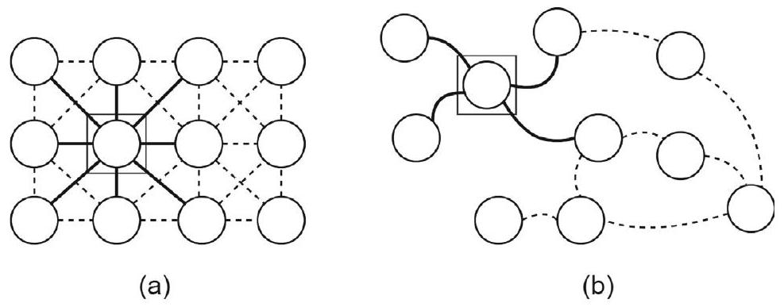
原書圖 17.1：(a) 歐氏網格圖（如影像像素），(b) 具有不規則形狀的任意拓撲圖
歐氏空間規律網格（Euclidean Grid） vs 非歐氏圖結構（Non-Euclidean Graph）
1. 歐氏網格 (CNN / 影像 / 語音)
固定平移不變性、固定鄰居數 (4/8 連通)
p(i,j)
2. 任意非歐氏圖結構 (GNN)
排列不變性、節點度數不規則、無全局坐標
v₁
v₂
v₃
v₄
v₅
v_target
示意圖解（架構/流程向量圖）。
🤖 AI 生圖可用：重繪此示意圖的提示詞（結構化）
【中文提示詞】
3D 等距立體概念圖，展示歐氏空間規律網格（如 2D 像素矩陣）與非歐氏拓撲圖（具有不規則度數與無序節點的發光網路）的鮮明對比。左側為排列整齊的藍色發光立方體網格，右側為有機延伸、金色節點與半透明連線構成的複雜圖結構。乾淨的科技背景、柔和環境光、頂級資訊圖表美學、Octane Render、8k。
【English Prompt (Midjourney v6 / DALL-E 3)】
3D isometric infographic comparison between Euclidean regular grid and Non-Euclidean irregular graph. On the left side, a neat 4x4 matrix of glowing blue cubes representing 2D image pixels with strict spatial coordinates. On the right side, an organic complex graph network with glowing golden nodes and glowing cyan edge connections of variable degrees. Clean dark slate background, soft cinematic studio lighting, highly detailed tech visualization, Octane Render style, Unreal Engine 5 aesthetic, 8k resolution, --ar 16:9 --v 6.0
在現實世界中，大量關鍵資料皆具備非歐幾里得幾何結構（Non-Euclidean Graph Structure） ，例如社交網路、生物分子結構、蛋白質相互作用網、網際網路網頁連結、知識圖譜與推薦系統。甚至傳統的影像（網格圖 Grid Graph）與文本（鏈狀序列 Token Graph）亦可視為圖結構的特例。
圖結構資料定義為 $\mathcal{G}(\mathcal{V}, \mathcal{E})$，其中 $\mathcal{V}$ 為節點集合（包含 $n$ 個節點），$\mathcal{E}$ 為邊集合。圖神經網路（GNNs）旨在學習圖結構拓撲與節點屬性特徵的高階向量表徵，支援三大核心機器學習任務：
圖層級任務（Graph-Level Task） ：預測整個圖的全局屬性。例如預測特定抗體蛋白質是否能與抗原蛋白質成功結合（分子活性或毒性預測）。節點層級任務（Node-Level Task） ：預測圖中各節點的身份、角色或標籤。例如在社交網路中預測用戶所屬的社群類別或居住城市。邊層級任務（Edge-Level / Link Prediction Task） ：預測節點對之間是否存在連接關係或邊的屬性值。例如在電影推薦系統中預測用戶與電影之間潛在的評分分數。
實務挑戰 ：深層 GNNs 面臨過平滑（Oversmoothing，多層聚合後節點特徵趨於一致失去辨識力） 與過擠壓（Oversquashing，長程資訊在訊息傳遞中被過度壓縮） 等理論瓶頸，現代架構多透過殘差跳躍連接、GraphSAGE 取樣與 Graph Transformers 加以克服。
祕笈 教授祕笈：圖結構表示法、鄰接矩陣與非歐氏拓撲特性
2.1
圖拉普拉斯矩陣與正規化形式（Graph Laplacian & Normalized Laplacian Matrix）
−
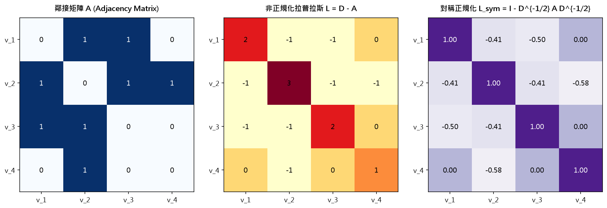
示意圖解：請對照 B0 準則（遮住文字仍能看出因果/機制對比）。
🤖 AI 生圖可用：重繪此示意圖的提示詞（結構化）
【中文提示詞】
科技風格 3D 資訊圖，展示圖拉普拉斯矩陣（Graph Laplacian）的運算分解與正規化轉換。背景為發光的網路拓撲圖，前景漂浮著三塊半透明的發光矩陣：度數矩陣 D（對角發光柱）、鄰接矩陣 A（網狀熱力圖）以及拉普拉斯矩陣 L = D - A。微光流動、粒子效果、磨砂玻璃質感、8k。
【English Prompt (Midjourney v6 / DALL-E 3)】
Futuristic 3D tech infographic illustrating the Graph Laplacian matrix formulation L = D - A. Floating holographic semi-transparent matrices: Degree matrix D with diagonal luminous pillars, Adjacency matrix A with interconnected neon nodes, and the resulting Laplacian matrix L with glowing energy gradients. Glowing graph topology in the blurred background, cybernetic particle effects, frosted glass texture, cinematic lighting, 8k --ar 16:9 --v 6.0
互動 demo：圖拉普拉斯矩陣與三大正規化矩陣即時求解器
非正規化拉普拉斯矩陣 $\boldsymbol{L} = \boldsymbol{D} - \boldsymbol{A}$；對稱正規化拉普拉斯矩陣 $\boldsymbol{L}_{sym} = \boldsymbol{D}^{-1/2}\boldsymbol{L}\boldsymbol{D}^{-1/2} = \boldsymbol{I} - \boldsymbol{D}^{-1/2}\boldsymbol{A}\boldsymbol{D}^{-1/2}$；隨機遊走正規化 $\boldsymbol{L}_{rw} = \boldsymbol{D}^{-1}\boldsymbol{L}$。
怎麼操作： 切換圖結構預設拓撲（4節點鏈狀圖、星狀圖、環狀圖、自訂邊權重），並切換 3 種拉普拉斯矩陣表示法（Unnormalized, Symmetric Normalized, Random Walk）。
觀察什麼： 觀察非正規化拉普拉斯矩陣的對角元等於該節點度數（$\boldsymbol{L}_{ii} = d_i$），非對角非零元為 $-1$；對稱正規化後對角元恆為 $1$，非對角元變為 $-\frac{1}{\sqrt{d_i d_j}}$。
正確基準： 所有拉普拉斯矩陣行和在非正規化下恆為 0（$\boldsymbol{L}\boldsymbol{1} = \boldsymbol{0}$），最小特徵值必為 $\lambda_1 = 0$，且對稱正規化特徵值範圍保證落在 $[0, 2]$ 區間內。
預設圖拓撲：4節點鏈狀圖 (Line Graph: 1-2-3-4) 4節點星狀圖 (Star Graph: 1為中心Hub) 4節點環狀圖 (Cycle Graph: 1-2-3-4-1) 4節點完全圖 (K4 Complete Graph) 矩陣類型：未正規化 L = D - A 對稱正規化 L_sym = D^{-1/2} L D^{-1/2} 隨機遊走 L_rw = D^{-1} L 正規化鄰接 D^{-1/2} A D^{-1/2}
對於包含 $n$ 個節點的無向圖 $\mathcal{G}(\mathcal{V}, \mathcal{E})$，其拓撲結構由鄰接矩陣（Adjacency Matrix） $\boldsymbol{A} \in \mathbb{R}^{n \times n}$ 表徵：若節點 $i$ 與節點 $j$ 相連則 $\boldsymbol{A}(i,j)=1$，否則為 $0$。
度矩陣（Degree Matrix） $\boldsymbol{D} \in \mathbb{R}^{n \times n}$ 為對角矩陣，其對角線元素為節點的度數（鄰居數）：
$$\boldsymbol{D}(i,i) := \sum_{j=1}^{n} \boldsymbol{A}(i,j)$$
非正規化圖拉普拉斯矩陣（Unnormalized Graph Laplacian） 定義為：
$$\boldsymbol{L} := \boldsymbol{D} - \boldsymbol{A} \in \mathbb{R}^{n \times n}$$
對稱正規化拉普拉斯矩陣（Symmetric Normalized Laplacian） ：
為消除不同節點度數差異對信號傳播強度的劇烈影響，引入參數化形式 $\boldsymbol{L} \leftarrow \boldsymbol{D}^{-\alpha} \boldsymbol{A} \boldsymbol{D}^{-\alpha}$。最常用且具對稱半正定性質的定義（取 $\alpha=0.5$）為：
$$\boldsymbol{L} = \boldsymbol{D}^{-1/2} \boldsymbol{A} \boldsymbol{D}^{-1/2}$$
（或標準對稱正規化形式 $\boldsymbol{L}_{\text{norm}} = \boldsymbol{I}_n - \boldsymbol{D}^{-1/2} \boldsymbol{A} \boldsymbol{D}^{-1/2}$）。拉普拉斯矩陣實質上表徵了圖上信號的微分離散運算元（二階導數），是頻譜圖論（Spectral Graph Theory）的基石。
祕笈 教授祕笈：圖拉普拉斯矩陣（Graph Laplacian）與三大正規化矩陣
2.2
圖傅立葉轉換與特徵基底投影（Graph Fourier Transform & Eigen-decomposition Basis）
−
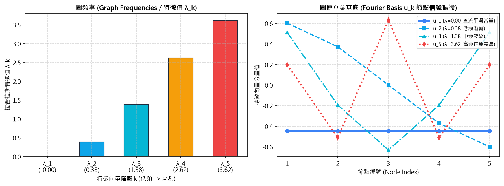
示意圖解：請對照 B0 準則（遮住文字仍能看出因果/機制對比）。
🤖 AI 生圖可用：重繪此示意圖的提示詞（結構化）
【中文提示詞】
概念性科技圖解，展示圖傅立葉變換（Graph Fourier Transform）。一個發光的圖網路上的信號被分解為多個特徵基底（Eigenvectors），從低頻平滑變化的藍色漸變波形，到高頻劇烈震盪的橙紅色交替波形。頻譜圖形化分解、數學幾何美感、極簡現代設計風格、8k。
【English Prompt (Midjourney v6 / DALL-E 3)】
Conceptual scientific visualization of Graph Fourier Transform. A graph signal on a luminous network decomposed into spectral eigenvector harmonic bases. Transitions smoothly from smooth low-frequency blue energy waves across connected nodes to sharp high-frequency red oscillating waves between adjacent nodes. Spectral harmonic manifold, elegant mathematical geometry, minimalist clean tech aesthetic, 8k --ar 16:9 --v 6.0
經典傅立葉轉換將連續時域信號投影至正弦/餘弦基底上。對於任意非歐幾里得圖，圖傅立葉轉換（Graph Fourier Transform, GFT） 則是將圖節點信號投影至圖拉普拉斯矩陣的特徵向量基底上。
對實對稱正規化拉普拉斯矩陣進行特徵值分解（Eigenvalue Decomposition） ：
$$\boldsymbol{L} = \boldsymbol{U} \boldsymbol{\Lambda} \boldsymbol{U}^\top$$
其中 $\boldsymbol{U} = [\boldsymbol{u}_1, \dots, \boldsymbol{u}_n] \in \mathbb{R}^{n \times n}$ 為正交特徵向量矩陣（稱為圖傅立葉基底 Fourier Basis Functions ），$\boldsymbol{\Lambda} = \operatorname{diag}([\lambda_1, \dots, \lambda_n]^\top)$ 為對應的特徵值（稱為圖頻率 Graph Frequencies ，$\lambda_k$ 越大代表圖信號震盪越劇烈）。
正向圖傅立葉轉換 ：將節點特徵信號 $\boldsymbol{x} = [x_1, \dots, x_n]^\top \in \mathbb{R}^n$ 投影至頻譜域：
$$\hat{\boldsymbol{x}} = f(\boldsymbol{x}) = \boldsymbol{U}^\top \boldsymbol{x}$$
逆向圖傅立葉轉換（Inverse GFT） ：從頻譜係數精確重構原始空間節點信號：
$$f^{-1}(\hat{\boldsymbol{x}}) = \boldsymbol{U} \hat{\boldsymbol{x}} = \boldsymbol{U} \boldsymbol{U}^\top \boldsymbol{x} = \boldsymbol{x}$$
祕笈 教授祕笈：圖傅立葉變換（Graph Fourier Transform）與譜基底投影
2.3
頻譜圖卷積與對角濾波器（Spectral Graph Convolution & Diagonal Filters）
−
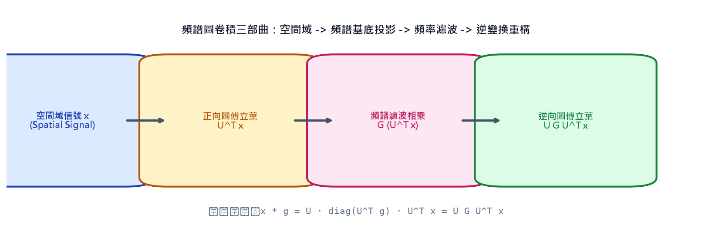
示意圖解：請對照 B0 準則（遮住文字仍能看出因果/機制對比）。
🤖 AI 生圖可用：重繪此示意圖的提示詞（結構化）
【中文提示詞】
3D 管道流程圖，展示頻譜圖卷積（Spectral Graph Convolution）的四步運算鏈：空間信號 -> 正向圖傅立葉投影 U^T x -> 頻譜濾波相乘 G -> 逆變換重構 U G U^T x。光導纖維通道連結著各個半透明水晶運算模組，信號在光纖中流動並被濾波處理，充滿未來科技感、8k。
【English Prompt (Midjourney v6 / DALL-E 3)】
3D pipeline flow diagram illustrating Spectral Graph Convolution operations: Spatial domain signal -> Forward Graph Fourier Transform U^T x -> Spectral Filter Multiplication G -> Inverse Transform reconstruction U G U^T x. Glowing fiber optic channels connecting frosted glass computation pods, luminous data packets transforming through the frequency filter, high-tech cybernetic aesthetic, clean lighting, 8k --ar 16:9 --v 6.0
互動 demo：頻譜圖卷積（Spectral Graph Convolution）與頻率濾波器模擬
頻譜圖卷積定義：$\boldsymbol{x} * \boldsymbol{g} = \boldsymbol{U}\boldsymbol{G}\boldsymbol{U}^\top \boldsymbol{x} = \boldsymbol{U}\operatorname{diag}(\hat{g}_1, \dots, \hat{g}_n)\boldsymbol{U}^\top \boldsymbol{x}$。
怎麼操作： 調整濾波器類型（低通平滑濾波器、高通邊緣檢測濾波器、帶通濾波器、全通濾波器）或手動調節各頻率響應增益 $g(\lambda_1), g(\lambda_2), g(\lambda_3), g(\lambda_4)$。
觀察什麼： 低通濾波器會消除節點間的尖銳突變，使整張圖的信號趨向平滑一致；高通濾波器則會突出相鄰節點間的數值差異（邊緣銳化）。
正確基準： 卷積運算結果嚴格等於圖傅立葉正變換 $\to$ 頻域逐點相乘 $\to$ 逆變換還原，矩陣形式為 $\boldsymbol{x}_{out} = (\boldsymbol{U}\boldsymbol{G}\boldsymbol{U}^\top)\boldsymbol{x}$。
濾波器預設：低通濾波 (Low-pass: 平滑去噪) 高通濾波 (High-pass: 邊緣反差放大) 帶通濾波 (Band-pass: 保留中頻) 全通無失真 (All-pass: g=1) 低頻增益 $g(\lambda_1)$： 1.5 高頻增益 $g(\lambda_4)$： 0.2
根據卷積定理（Convolution Theorem），兩信號在空間域的卷積等價於其在頻譜域的逐點乘積。因此，圖信號 $\boldsymbol{x} \in \mathbb{R}^n$ 與圖濾波器 $\boldsymbol{g} \in \mathbb{R}^n$ 的頻譜圖卷積（Spectral Graph Convolution） 定義為：
$$\boldsymbol{x} * \boldsymbol{g} := f^{-1}(f(\boldsymbol{x}) \odot f(\boldsymbol{g})) = \boldsymbol{U} ((\boldsymbol{U}^\top \boldsymbol{x}) \odot (\boldsymbol{U}^\top \boldsymbol{g})) = \boldsymbol{U} \boldsymbol{G} \boldsymbol{U}^\top \boldsymbol{x}$$
其中頻譜濾波矩陣 $\boldsymbol{G} \in \mathbb{R}^{n \times n}$ 為對角矩陣：
$$\boldsymbol{G} := \operatorname{diag}(\boldsymbol{U}^\top \boldsymbol{g}) = \begin{bmatrix} \boldsymbol{u}_1^\top \boldsymbol{g} & 0 & \cdots & 0 \\ 0 & \boldsymbol{u}_2^\top \boldsymbol{g} & \cdots & 0 \\ \vdots & \vdots & \ddots & \vdots \\ 0 & 0 & \cdots & \boldsymbol{u}_n^\top \boldsymbol{g} \end{bmatrix}$$
多特徵通道擴展 ：若每個節點具有 $d$ 維特徵向量，即特徵矩陣 $\boldsymbol{X} \in \mathbb{R}^{n \times d}$，則卷積運算擴展為：
$$\boldsymbol{X} * \boldsymbol{g} = \boldsymbol{U} \boldsymbol{G} \boldsymbol{U}^\top \boldsymbol{X}$$
若堆疊為第 $\ell$ 層神經網路，其輸出為 $\boldsymbol{H}^{(\ell)} = \sigma(\boldsymbol{U} \boldsymbol{G} \boldsymbol{U}^\top \boldsymbol{H}^{(\ell-1)})$。然而，直接計算特徵分解 $\boldsymbol{U}$ 的時間複雜度高達 $\mathcal{O}(n^3)$，且濾波器參數非局部化，難以直接應用於大規模動態圖。
祕笈 教授祕笈：頻譜圖卷積（Spectral Graph Convolution）與頻率濾波器
3
切比雪夫多項式近似與 ChebNet 頻譜卷積（ChebNet: Chebyshev Polynomial Approximation）
−
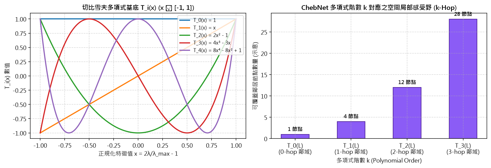
示意圖解：請對照 B0 準則（遮住文字仍能看出因果/機制對比）。
🤖 AI 生圖可用：重繪此示意圖的提示詞（結構化）
【中文提示詞】
3D 等距圖解，展示 ChebNet 切比雪夫多項式近似與局部 K-hop 鄰域截斷。中心節點向外擴散出一圈圈如同水波漣漪般的發光同心球殼，分別標註著 1-hop、2-hop、K-hop 感受野邊界。旁邊漂浮著切比雪夫多項式基底波形，層次分明、精準的科研可視化美學、8k。
【English Prompt (Midjourney v6 / DALL-E 3)】
3D isometric infographic showing ChebNet Chebyshev polynomial approximation and localized K-hop neighborhood expansion. A central glowing node emitting expanding concentric energy rings marking 1-hop, 2-hop, and K-hop localized receptive fields. Floating Chebyshev polynomial orthogonal curves in the air, precise scientific data visualization, clean futuristic UI style, 8k --ar 16:9 --v 6.0
為突破 $\mathcal{O}(n^3)$ 特徵分解瓶頸，ChebNet（Defferrard et al., 2016） 提出利用 $k$ 階切比雪夫多項式（Chebyshev Polynomials） 對頻譜濾波器 $\boldsymbol{G}$ 進行截斷展開逼近。
切比雪夫多項式定義於區間 $[-1, 1]$，其遞迴關係為：
$$T_0(x) = 1, \quad T_1(x) = x, \quad T_i(x) = 2x T_{i-1}(x) - T_{i-2}(x)$$
由於拉普拉斯矩陣特徵值 $\lambda \in [0, \lambda_{\max}]$，先將特徵值正規化至 $[-1, 1]$：$\tilde{\boldsymbol{\Lambda}} := \frac{2}{\lambda_{\max}} \boldsymbol{\Lambda} - \boldsymbol{I}_n$。將濾波器參數化為：$\boldsymbol{G} = \sum_{i=0}^k \theta_i T_i(\tilde{\boldsymbol{\Lambda}})$。
神奇的矩陣結合代換 ：定義縮放拉普拉斯矩陣 $\tilde{\boldsymbol{L}} := \frac{2}{\lambda_{\max}} \boldsymbol{L} - \boldsymbol{I}_n$。由於正交性 $\boldsymbol{U} T_i(\tilde{\boldsymbol{\Lambda}}) \boldsymbol{U}^\top = T_i(\boldsymbol{U} \tilde{\boldsymbol{\Lambda}} \boldsymbol{U}^\top) = T_i(\tilde{\boldsymbol{L}})$，圖卷積簡化為：
$$\boldsymbol{x} * \boldsymbol{g} = \sum_{i=0}^k \theta_i T_i(\tilde{\boldsymbol{L}}) \boldsymbol{x}$$
優勢 ：完全無需進行特徵分解！且 $\tilde{\boldsymbol{L}}^i \boldsymbol{x}$ 具有精確的 $i$-跳局部性（$i$-hop spatial localization） ，運算複雜度降至 $\mathcal{O}(k |\mathcal{E}|)$（線性正比於邊數）。
祕笈 教授祕笈：ChebNet 切比雪夫多項式近似與局部 $K$-hop 展開
4
圖卷積網路（GCN）一階近似與自環正規化（Graph Convolutional Networks & Self-Loop Renormalization）
−
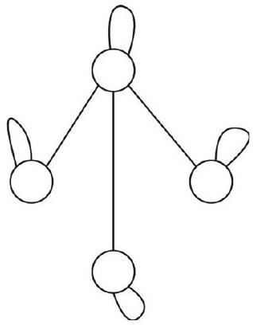
原書圖 17.2：GCN 圖卷積網路中為節點添加自環（Self-loops）
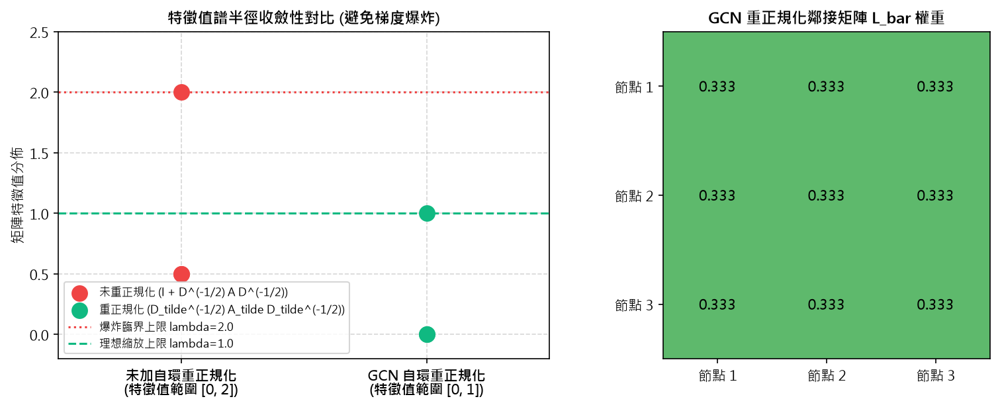
示意圖解：請對照 B0 準則（遮住文字仍能看出因果/機制對比）。
🤖 AI 生圖可用：重繪此示意圖的提示詞（結構化）
【中文提示詞】
對比式 3D 資訊圖，展示 GCN（圖卷積網路）的自環與重正規化技巧（Renormalization Trick）。左側為未加自環時特徵值譜半徑發散引發的數值震盪；右側為加入自環 (A + I) 並進行對稱歸一化 D_tilde^(-1/2) A_tilde D_tilde^(-1/2) 後平穩收斂的綠色能量分佈。對比強烈、科技感、8k。
【English Prompt (Midjourney v6 / DALL-E 3)】
Comparative 3D tech infographic of GCN Renormalization Trick. Left side shows numerical instability and exploding eigenvalues on an unmodified graph. Right side shows stable, bounded eigenvalue convergence within [0, 1] after adding self-loops (A + I) and applying symmetric renormalization. Crisp data visualization, glowing emerald green stability field, dark modern tech aesthetic, 8k --ar 16:9 --v 6.0
互動 demo：GCN 自環重正規化技巧（Renormalization Trick）與譜半徑收斂
GCN 單層卷積：$\boldsymbol{H}^{(l+1)} = \sigma\left(\tilde{\boldsymbol{D}}^{-1/2}\tilde{\boldsymbol{A}}\tilde{\boldsymbol{D}}^{-1/2}\boldsymbol{H}^{(l)}\boldsymbol{\Theta}\right)$，其中 $\tilde{\boldsymbol{A}} = \boldsymbol{A} + \boldsymbol{I}_n, \tilde{\boldsymbol{D}}_{ii} = \sum_j \tilde{\boldsymbol{A}}_{ij}$。
怎麼操作： 開啟/關閉「自環重正規化（Renormalization）」開關，觀察矩陣特徵值分佈以及多層前向傳播時節點特徵範數的變化趨勢。
觀察什麼： 未重正規化矩陣 $\boldsymbol{I} + \boldsymbol{D}^{-1/2}\boldsymbol{A}\boldsymbol{D}^{-1/2}$ 的特徵值落在 $[0, 2]$，多層堆疊後特徵能量會以 $2^L$ 指數爆炸；重正規化後譜半徑被嚴格約束在 $[0, 1]$。
正確基準： 加入自環後的鄰接矩陣 $\tilde{\boldsymbol{A}}$ 對角線全為 1，正規化權重 $\tilde{A}_{sym, ij} = \frac{1}{\sqrt{(d_i+1)(d_j+1)}}$ 保證數值極度穩定。
GNN 堆疊層數 $L$： 3 層
Graph Convolutional Network（GCN, Kipf & Welling, 2017） 是 ChebNet 的一階局部截斷極簡化版本（取 $k=1, \lambda_{\max} \approx 2$），建立了現代空間圖卷積的標準範式。
推導過程：
ChebNet 取 $k=1$：$\boldsymbol{x} * \boldsymbol{g} \approx \theta_0 \boldsymbol{x} + \theta_1 \left(\frac{2}{\lambda_{\max}}\boldsymbol{L} - \boldsymbol{I}\right)\boldsymbol{x} \approx \theta_0 \boldsymbol{x} + \theta_1 (\boldsymbol{L} - \boldsymbol{I})\boldsymbol{x}$。
為防止過擬合并減少參數，約束 $\theta = \theta_0 = -\theta_1$，則 $\boldsymbol{x} * \boldsymbol{g} \approx \theta (\boldsymbol{I} + \boldsymbol{D}^{-1/2}\boldsymbol{A}\boldsymbol{D}^{-1/2})\boldsymbol{x}$。
重正規化技巧（Renormalization Trick） ：矩陣 $\boldsymbol{I} + \boldsymbol{D}^{-1/2}\boldsymbol{A}\boldsymbol{D}^{-1/2}$ 的特徵值範圍在 $[0, 2]$，多層堆疊易引發數值不穩與梯度爆炸。因此在圖中加入自環（Self-loops） ：
$$\tilde{\boldsymbol{A}} := \boldsymbol{A} + \boldsymbol{I}_n, \quad \tilde{\boldsymbol{D}}(i,i) := \sum_{j} \tilde{\boldsymbol{A}}(i,j)$$
$$\bar{\boldsymbol{L}} := \tilde{\boldsymbol{D}}^{-1/2} \tilde{\boldsymbol{A}} \tilde{\boldsymbol{D}}^{-1/2}$$
GCN 層傳播公式 ：
$$\boldsymbol{H}^{(\ell)} = \sigma\left( \tilde{\boldsymbol{D}}^{-1/2} \tilde{\boldsymbol{A}} \tilde{\boldsymbol{D}}^{-1/2} \boldsymbol{H}^{(\ell-1)} \boldsymbol{\Theta} \right)$$
其中 $\boldsymbol{\Theta} \in \mathbb{R}^{d_{\text{in}} \times d_{\text{out}}}$ 為可學習權重矩陣。GCN 本質上是先依拓撲進行正規化鄰居特徵聚合，再進行特徵維度線性轉換與非線性活化。
祕笈 教授祕笈：GCN 自環重正規化技巧（Renormalization Trick）與譜半徑收斂
5.1
空間聚合通用框架：Sum, Mean 與對稱正規化 Pooling（General Spatial Message Passing & Pooling Frameworks）
−
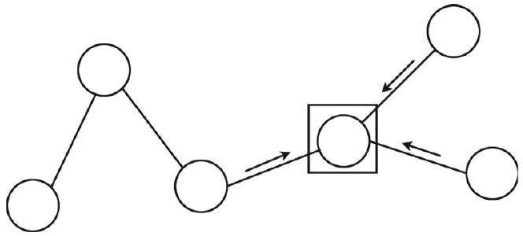
原書圖 17.3：圖神經網路中節點在線性變換前受相連鄰居節點特徵影響
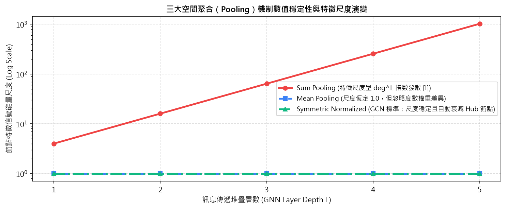
示意圖解：請對照 B0 準則（遮住文字仍能看出因果/機制對比）。
🤖 AI 生圖可用：重繪此示意圖的提示詞（結構化）
【中文提示詞】
3D 流程概念圖，展示 GNN 空間聚合（Spatial Aggregation）三大機制的尺度演變：Sum Pooling（紅光爆發）、Mean Pooling（藍色平均流）與 Symmetric Normalization（綠色平穩流）。周圍有多個度數懸殊的節點將特徵傳遞給中心節點，展現對高中心度 Hub 節點的自適應縮放。8k。
【English Prompt (Midjourney v6 / DALL-E 3)】
3D visualization of spatial aggregation pooling mechanisms in Graph Neural Networks: Sum Pooling (exponential signal burst), Mean Pooling (uniform average flow), and Symmetric Normalization (balanced degree-attenuated aggregation). Luminous nodes of varying connectivity transmitting energy vectors to a central receiver node, cybernetic data stream, clean background, 8k --ar 16:9 --v 6.0
互動 demo：空間聚合機制橫向對比：Sum vs Mean vs Symmetric Normalized
三大聚合算子：(1) Sum: $\sum_{j \in \mathcal{N}(i)} h_j$；(2) Mean: $\frac{1}{d_i} \sum_{j \in \mathcal{N}(i)} h_j$；(3) Sym-Norm (GCN): $\sum_{j \in \mathcal{N}(i)} \frac{1}{\sqrt{d_i d_j}} h_j$。
怎麼操作： 調整中心節點與其相連鄰居的度數分佈（如包含一個度數為 8 的 Hub 節點與普通度數為 2 的節點），比較三種聚合方式對中心節點特徵尺度的影響。
觀察什麼： Sum 聚合會使高連接節點的特徵迅速膨脹爆炸；Mean 聚合完全消除了度數資訊；Symmetric Normalization 同時兼顧了尺度穩定與大度數節點影響力的合理衰減。
正確基準： GCN 聚合權重公式 $\frac{1}{\sqrt{d_i d_j}}$ 確保若鄰居 $j$ 本身是超大 Hub 節點，其對節點 $i$ 的貢獻會被 $\sqrt{d_j}$ 自動懲罰降權。
鄰居度數結構：異質網路 (包含 1 個 Hub 大度數節點) 正則網路 (所有節點度數 d=3) 極端網路 (Hub 節點度數 d=12) 輸入信號強度： 1.0
從空間訊息傳遞（Spatial Message Passing）視角，GNN 的第 $\ell$ 層節點更新可抽象為聚合（Aggregation / Pooling） 與更新（Update） 兩大步驟。對於節點 $i$ 及其鄰居集合 $\mathcal{N}_i$（含自環）：
求和聚合（Sum Pooling） ：
$$\boldsymbol{h}_i^{(\ell)} = \sigma\left( \sum_{j \in \mathcal{N}_i} \boldsymbol{\Theta} \boldsymbol{h}_j^{(\ell-1)} \right)$$
優點在於能區分不同大小的多重集（如 GIN 架構），但缺點是節點度數過大時特徵尺度隨層數呈幾何級數發散。均值聚合（Mean Pooling） ：
$$\boldsymbol{H}^{(\ell)} = \sigma\left( \tilde{\boldsymbol{D}}^{-1} \tilde{\boldsymbol{A}} \boldsymbol{H}^{(\ell-1)} \boldsymbol{\Theta} \right) \iff \boldsymbol{h}_i^{(\ell)} = \sigma\left( \sum_{j \in \mathcal{N}_i} \frac{1}{|\mathcal{N}_i|} \boldsymbol{\Theta} \boldsymbol{h}_j^{(\ell-1)} \right)$$
透過除以自身度數 $|\mathcal{N}_i|$ 保持輸出特徵尺度恆定，但忽略了鄰居節點 $j$ 本身的重要性差異。對稱正規化均值聚合（Symmetric Normalized Mean Pooling） ：
$$\boldsymbol{h}_i^{(\ell)} = \sigma\left( \sum_{j \in \mathcal{N}_i} \frac{1}{\sqrt{|\mathcal{N}_i||\mathcal{N}_j|}} \boldsymbol{\Theta} \boldsymbol{h}_j^{(\ell-1)} \right)$$
即標準 GCN採用的形式：若鄰居 $j$ 連接數極少（$|\mathcal{N}_j|$ 小），其對節點 $i$ 的貢獻權重較大；反之若 $j$ 為度數極高的超級集線節點（Hub），其對單一節點 $i$ 的影響力被自然衰減。
祕笈 教授祕笈：空間聚合機制（Spatial Aggregation）與三大 Pooling 橫向評比
5.2
圖機器學習三大下游任務：節點、圖與邊預測（Node, Graph & Link Machine Learning Tasks）
−
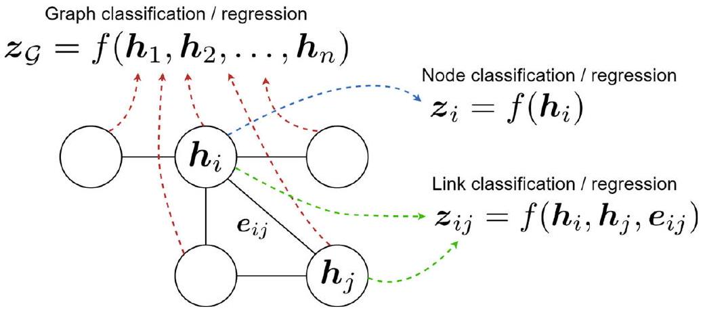
原書圖 17.4：圖神經網路特徵在各級機器學習任務中的應用
訊息傳遞圖神經網路 (MPNN) 三階段通用運算流程
1. 邊訊息生成 (Message)
m_{ij}^{(l)} = M(h_i^{(l)}, h_j^{(l)}, e_{ij})
• 對每條連接邊 (i, j)
• 結合來源節點特徵 h_j
• 結合目標節點特徵 h_i
• 結合邊自身屬性 e_{ij}
2. 鄰域聚合 (Aggregate)
m_i^{(l)} = ⨁_{j ∈ N(i)} m_{ij}^{(l)}
• 排列不變對稱算子 (⨁)
• Sum (保留圖結構/度數)
• Mean (尺度恆定/防爆)
• Max / Attention 加權
3. 節點狀態更新 (Update)
h_i^{(l+1)} = U(h_i^{(l)}, m_i^{(l)})
• 結合舊狀態與聚合訊息
• MLP / GRU / 殘差融合
• 輸出下一層節點表徵
• 支持節點分類/下游任務
示意圖解（架構/流程向量圖）。
🤖 AI 生圖可用：重繪此示意圖的提示詞（結構化）
【中文提示詞】
3D 模組圖，展示訊息傳遞圖神經網路（MPNN）的三階段循環架構：邊訊息生成模組 M -> 鄰域排列不變聚合模組 ⨁ -> 節點狀態更新模組 U。發光的金色粒子代表訊息沿著晶瑩剔透的網路邊緣流動並匯聚到神經元中更新內部向量狀態。極致細節、科技藝術風格、8k。
【English Prompt (Midjourney v6 / DALL-E 3)】
3D modular architecture of Message Passing Neural Networks (MPNN) showing the three-stage loop: Message generation along edges -> Permutation-invariant neighborhood Aggregation -> Node state Update. Luminous golden particles flowing across crystal network edges and converging into node processing cores, glowing neon circuitry, high-tech conceptual art, 8k --ar 16:9 --v 6.0
經過 $L$ 層圖卷積或訊息傳遞後，各節點獲得融入了 $L$-跳子圖結構的最終高階嵌入表示 $\boldsymbol{h}_i^{(L)}$。根據具體應用場景，這些嵌入會饋入不同的下游損失函數中：
節點分類與迴歸（Node Classification / Regression） ：
直接將節點最終表示 $\boldsymbol{h}_i^{(L)}$ 饋入分類器（如 Softmax 或 MLP）：
$$\hat{\boldsymbol{y}}_i = \operatorname{Softmax}(\boldsymbol{W}_{\text{node}} \boldsymbol{h}_i^{(L)} + \boldsymbol{b})$$
應用於社群用戶標籤預測、論文學科分類（如 Cora 資料集）。圖分類與迴歸（Graph Classification / Regression） ：
透過圖讀出函數（Readout / Global Pooling） 將圖中所有節點嵌入聚合為單一全圖向量 $\boldsymbol{h}_{\mathcal{G}}$：
$$\boldsymbol{h}_{\mathcal{G}} = \operatorname{Readout}(\{\boldsymbol{h}_i^{(L)} \mid i \in \mathcal{V}\}) = \operatorname{MLP}\left( \sum_{i \in \mathcal{V}} \boldsymbol{h}_i^{(L)} \Big\| \max_{i \in \mathcal{V}} \boldsymbol{h}_i^{(L)} \right)$$
隨後預測分子毒性、溶解度或圖同構性質。邊預測與連結分類（Link Prediction / Edge Classification） ：
利用相連節點對嵌入 $\boldsymbol{h}_i^{(L)}, \boldsymbol{h}_j^{(L)}$ 及邊特徵 $\boldsymbol{e}_{ij}$ 預測邊的存在機率或邊屬性：
$$\hat{\boldsymbol{y}}_{ij} = \operatorname{Sigmoid}(\boldsymbol{h}_i^{(L)\top} \boldsymbol{W}_{\text{edge}} \boldsymbol{h}_j^{(L)})$$
廣泛應用於知識圖譜補全與電子商務推薦。
祕笈 教授祕笈：訊息傳遞圖神經網路（MPNN）三階段通用框架
6.1
圖注意力網路（GAT）機制與鄰居 Softmax 加權（Graph Attention Networks & Neighbor Attention）
−
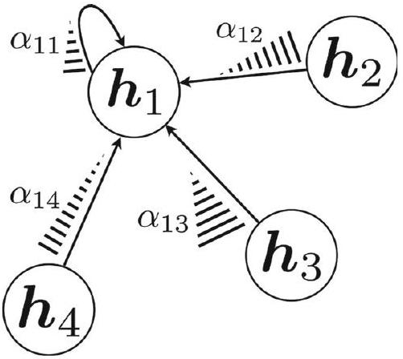
原書圖 17.5：圖中節點之間注意力權重分配示意圖
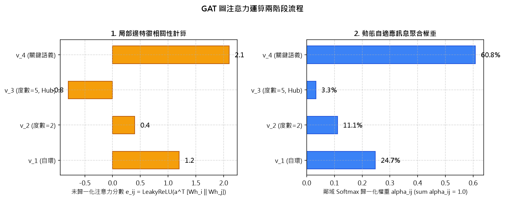
示意圖解：請對照 B0 準則（遮住文字仍能看出因果/機制對比）。
🤖 AI 生圖可用：重繪此示意圖的提示詞（結構化）
【中文提示詞】
3D 概念圖，展示圖注意力網路（GAT）的動態邊注意力權重分配。中心目標節點延伸出粗細不同、亮度不一的光束連接到各個鄰居節點。最關鍵的鄰居節點連線閃耀著強烈的橙色高光（α = 0.65），次要鄰居連線則呈現暗淡細光，精準體現自適應注意力機制。8k。
【English Prompt (Midjourney v6 / DALL-E 3)】
3D visualization of Graph Attention Network (GAT) dynamic edge weighting. A central node connects to multiple neighboring nodes via glowing light beams of varying thickness and intensity. The most semantically important neighbor is linked with a thick brilliant amber laser beam (alpha = 0.65), while less relevant neighbors have faint thin threads, demonstrating dynamic attention allocation, 8k --ar 16:9 --v 6.0
GCN 對所有鄰居採用由拓撲度數決定的固定權重 $\frac{1}{\sqrt{d_i d_j}}$。Graph Attention Network（GAT, Veličković et al., 2018） 引入自注意力機制，讓節點能夠根據特徵內容動態自適應學習鄰居的重要性權重 $\alpha_{ij}$ 。
GAT 訊息聚合公式：
$$\boldsymbol{h}_i^{(\ell)} = \sigma\left( \sum_{j \in \mathcal{N}_i} \alpha_{ij} \boldsymbol{W} \boldsymbol{h}_j^{(\ell-1)} \right)$$
注意力係數計算三部曲 ：
特徵共享線性投影 ：所有節點經可學習參數矩陣 $\boldsymbol{W}$ 投影至高維特徵空間。非對稱未正規化注意力分數 $a_{ij}$ ：將節點 $i$ 與節點 $j$ 的特徵拼接，經可學習注意力向量 $\boldsymbol{a}$ 與 LeakyReLU 活化：
$$e_{ij} = \operatorname{LeakyReLU}\left( \boldsymbol{a}^\top [\boldsymbol{W} \boldsymbol{h}_i \,\|\, \boldsymbol{W} \boldsymbol{h}_j] \right)$$鄰居遮罩 Softmax 歸一化 ：僅在節點 $i$ 的一階局部鄰域 $\mathcal{N}_i$ 內計算 Softmax：
$$\alpha_{ij} = \frac{\exp(e_{ij})}{\sum_{k \in \mathcal{N}_i} \exp(e_{ik})}$$
多頭注意力擴展 ：支援 $K$ 個獨立注意力頭並行計算後拼接或取均值，極大提升注意力分佈的穩定性與表達容量。
祕笈 教授祕笈：圖注意力網路（GAT）邊注意力係數與動態特徵聚合
6.2
GAT 與 Transformer 之架構深度對比（Comparison: GAT vs. Transformer）
−
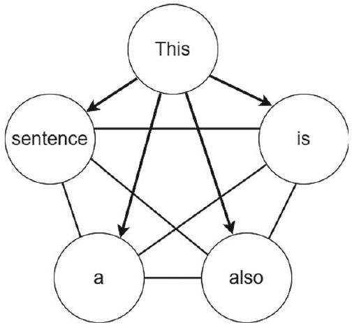
原書圖 17.6：句子 'This is also a sentence.' 視為全連接圖的注意力連結
多頭圖注意力機制（Multi-Head GAT）結構與聚合模式
輸入特徵 h_i, h_j
h_i
h_1
h_2
h_3
Attention Head 1 (α_{ij}^1, W^1)
專注局部緊密結構特徵
Attention Head 2 (α_{ij}^2, W^2)
專注長程/跨社區樞紐節點
Attention Head K (α_{ij}^K, W^K)
專注特定屬性/語義模式
多頭輸出聚合策略
隱藏層：拼接（Concatenation）
h_i' = ∥_{k=1}^K σ(∑ α_{ij}^k W^k h_j)
特徵維度擴展為 K × F'
輸出層：平均（Averaging）
h_i' = σ( 1/K ∑_{k=1}^K ∑ α_{ij}^k W^k h_j )
維持目標分類維度 C
示意圖解（架構/流程向量圖）。
🤖 AI 生圖可用：重繪此示意圖的提示詞（結構化）
【中文提示詞】
3D 複合圖解，展示多頭圖注意力機制（Multi-Head GAT）與 Transformer 序列圖模型。多組不同顏色（藍、粉、金）的注意力光束在同一個圖拓撲上並行運算，隨後在隱藏層進行維度拼接（Concatenation），並在輸出層進行平均（Averaging）。多維空間交互美感、8k。
【English Prompt (Midjourney v6 / DALL-E 3)】
3D intricate diagram of Multi-Head Graph Attention Network (Multi-Head GAT). Multiple colored attention beams (cyan, magenta, gold) operating simultaneously across the same graph network in parallel subspaces, then concatenating in the hidden layers and averaging at the final output head. Complex multi-dimensional tensor flow, futuristic UI aesthetic, 8k --ar 16:9 --v 6.0
Transformer（Vaswani et al., 2017）與 GAT（Veličković et al., 2018）皆本質於注意力機制，兩者存在深度的理論統一性與關鍵架構差異：
Query/Key 投影權重設計 ：
GAT ：Query 與 Key 共享相同的線性變換矩陣 $\boldsymbol{W}$ ，注意力分數由單層前饋網路 $\boldsymbol{a}^\top [\boldsymbol{W}\boldsymbol{h}_i \,\|\, \boldsymbol{W}\boldsymbol{h}_j]$ 產生。Transformer ：Query、Key、Value 分別使用獨立的線性投影矩陣 $\boldsymbol{W}_Q, \boldsymbol{W}_K, \boldsymbol{W}_V$ ，注意力分數由縮放點積 $\frac{\boldsymbol{q}_i^\top \boldsymbol{k}_j}{\sqrt{d_k}}$ 產生。
注意力的計算範圍與圖結構感應 ：
GAT ：Softmax 僅在圖拓撲指定的一階鄰域 $\mathcal{N}_i$ 內求和 ，自然利用稀疏圖結構，複雜度為 $\mathcal{O}(|\mathcal{V}|d + |\mathcal{E}|d)$。Transformer ：Softmax 在序列中所有 Token（全連接完全圖 Complete Graph）求和 ，每對 Token 皆可直接互動，複雜度為 $\mathcal{O}(n^2 d)$。
統一視角 ：標準 Transformer 實質上是 GAT 在無拓撲先驗的完全圖（Fully Connected Graph） 上的特例；而 GAT 則是將 Transformer 局域化在稀疏非歐幾里得拓撲結構上的推廣。
祕笈 教授祕笈：多頭圖注意力機制（Multi-Head GAT）與 Transformer 序列圖等價性
7
圖自編碼器架構概觀與多層 GCN 編碼（Graph Autoencoder Architecture & Multi-layer GCN）
−
圖表徵學習與圖自動編碼器（GAE）架構總覽
圖輸入數據
拓撲矩陣 A
節點特徵 X
高維稀疏離散圖
GNN 編碼器
GCN Layer 1
GCN Layer 2
Z = GNN(X, A)
低維潛在空間 Z
z_i ∈ ℝ^d
保留局部鄰域
& 全局社群結構
無參內積解碼器
 = σ(Z Zᵀ)
二元交叉熵重構損失
L = -∑ A_{ij} log Â_{ij}
✓ 邊預測 / 圖生成
示意圖解（架構/流程向量圖）。
🤖 AI 生圖可用：重繪此示意圖的提示詞（結構化）
【中文提示詞】
3D 幾何結構圖，展示圖表徵學習（Graph Representation Learning）將高維複雜離散拓撲映射至低維連續潛在空間（Latent Space）。左側為複雜的高維網路圖，中間穿過一個錐形發光投影通道，右側為節點在 3D 歐氏嵌入空間中按社群分群聚合的發光球體分佈。8k。
【English Prompt (Midjourney v6 / DALL-E 3)】
3D geometric visualization of Graph Representation Learning mapping discrete complex graph topology into continuous low-dimensional latent embedding space. Left side displays an intricate high-dimensional graph passing through a glowing bottleneck funnel, projecting onto the right side as clustered spherical coordinates in a 3D Euclidean manifold, modern data science art, 8k --ar 16:9 --v 6.0
在無監督圖表徵學習中，圖自編碼器（Graph Autoencoder, GAE, Kipf & Welling, 2016） 旨在無標籤指導下，學習能保留圖拓撲結構與節點屬性的低維潛在嵌入（Latent Embeddings）。
標準 GAE 編碼器由兩層 GCN 堆疊構成：
第一層 GCN 編碼（特徵降維與特徵交互） ：
$$\boldsymbol{H}^{(1)} = \operatorname{ReLU}\left( \bar{\boldsymbol{L}} \boldsymbol{X} \boldsymbol{\Theta}_1 \right)$$
其中 $\boldsymbol{X} \in \mathbb{R}^{n \times d}$ 為原始節點特徵矩陣，$\bar{\boldsymbol{L}} = \tilde{\boldsymbol{D}}^{-1/2} \tilde{\boldsymbol{A}} \tilde{\boldsymbol{D}}^{-1/2}$，$\boldsymbol{\Theta}_1 \in \mathbb{R}^{d \times d_1}$。第二層 GCN 編碼（生成潛在空間嵌入 $\boldsymbol{Z}$） ：
第二層通常不施加非線性活化，直接輸出連續空間潛在向量：
$$\boldsymbol{Z} = \boldsymbol{H}^{(2)} = \bar{\boldsymbol{L}} \boldsymbol{H}^{(1)} \boldsymbol{\Theta}_2 = \operatorname{GCN}(\boldsymbol{X}, \boldsymbol{A}; \boldsymbol{\Theta}_1, \boldsymbol{\Theta}_2)$$
其中 $\boldsymbol{Z} \in \mathbb{R}^{n \times p}$（$p \ll d$）。
GAE 將高維節點屬性與離散圖拓撲結構緊密壓縮為緊湊的連續向量空間 $\boldsymbol{Z}$，為下游圖重構與變分推論提供了標準編碼骨架。
祕笈 教授祕笈：圖表徵學習（Graph Representation Learning）與低維流形嵌入
7.1
圖重構自編碼器與鄰接矩陣重構（Graph Reconstruction Autoencoder & Adjacency Sigmoid Decoder）
−
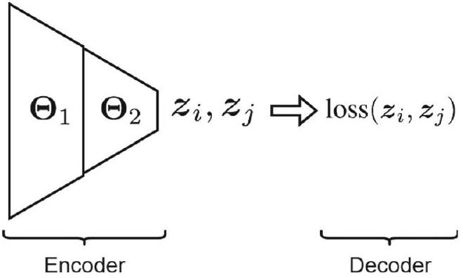
原書圖 17.7：圖重構自動編碼器（Graph Reconstruction Autoencoder）結構
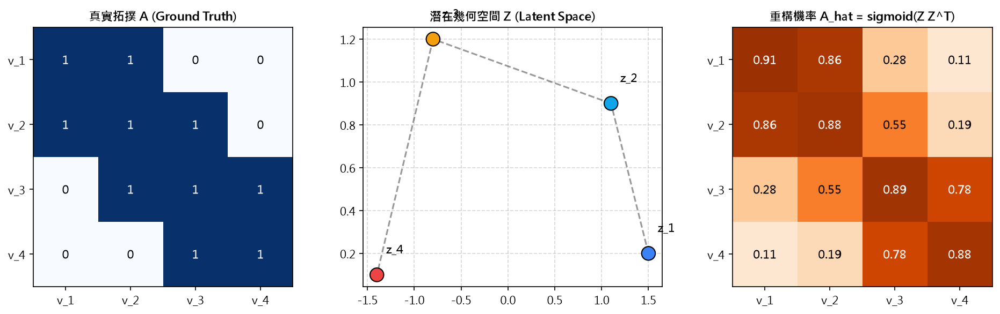
示意圖解：請對照 B0 準則（遮住文字仍能看出因果/機制對比）。
🤖 AI 生圖可用：重繪此示意圖的提示詞（結構化）
【中文提示詞】
3D 資訊圖，展示圖重構自動編碼器（GAE）的編碼-解碼-重構管線。輸入圖拓撲經過 GCN 編碼器生成潛在矩陣 Z，隨後無參數內積解碼器計算 A_hat = sigmoid(Z Z^T)，以熱力圖形式重構出原始鄰接矩陣與預測潛在遺失邊。高科技透視感、清晰的矩陣運算流、8k。
【English Prompt (Midjourney v6 / DALL-E 3)】
3D tech infographic illustrating Graph Autoencoder (GAE) architecture. Graph input flows through a GCN encoder to produce node latent vectors Z, followed by a non-parametric inner-product decoder A_hat = sigmoid(Z Z^T) reconstructing the original adjacency matrix and predicting missing link probabilities as a luminous heatmap, sleek modern data visualization, 8k --ar 16:9 --v 6.0
在非機率型圖重構自編碼器（Non-probabilistic GAE） 中，解碼器（Decoder）無需引入額外的可學習參數層，而是精巧地透過潛在節點向量的內積相似度（Inner-Product Similarity） 直接重構圖的拓撲鄰接矩陣。
內積解碼器（Inner-Product Decoder） ：
$$\hat{\boldsymbol{A}} = \operatorname{Sigmoid}\left( \boldsymbol{Z} \boldsymbol{Z}^\top \right)$$
具體到任意兩節點 $i$ 與 $j$ 之間的連結重構預測機率：
$$\hat{\boldsymbol{A}}(i,j) = \frac{1}{1 + \exp(-\boldsymbol{z}_i^\top \boldsymbol{z}_j)}$$
幾何意義 ：若節點 $i$ 與 $j$ 在原圖中有邊相連，模型將迫使其潛在嵌入 $\boldsymbol{z}_i$ 與 $\boldsymbol{z}_j$ 方向高度對齊（內積 $\boldsymbol{z}_i^\top \boldsymbol{z}_j \gg 0$），從而使預測機率 $\hat{\boldsymbol{A}}(i,j) \to 1$。
損失函數（Loss Function） ：
$$\min_{\boldsymbol{\theta}} \|\hat{\boldsymbol{A}} - \boldsymbol{A}\|_F^2 = \sum_{i=1}^n \sum_{j=1}^n (\hat{\boldsymbol{A}}(i,j) - \boldsymbol{A}(i,j))^2$$
（或二元交叉熵損失 $\text{BCE}(\hat{\boldsymbol{A}}, \boldsymbol{A})$）。透過端到端反向傳播優化編碼器權重 $\boldsymbol{\Theta}_1, \boldsymbol{\Theta}_2$。
祕笈 教授祕笈：圖重構自動編碼器（GAE）與無參數內積解碼器
7.2
圖變分自編碼器（VGAE）與潛在空間 ELBO 優化（Variational Graph Autoencoder & Latent Space Inference）
−
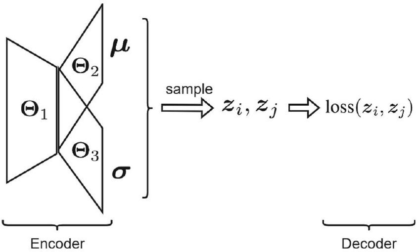
原書圖 17.8：變分圖自動編碼器（Graph Variational Autoencoder, VGAE）結構
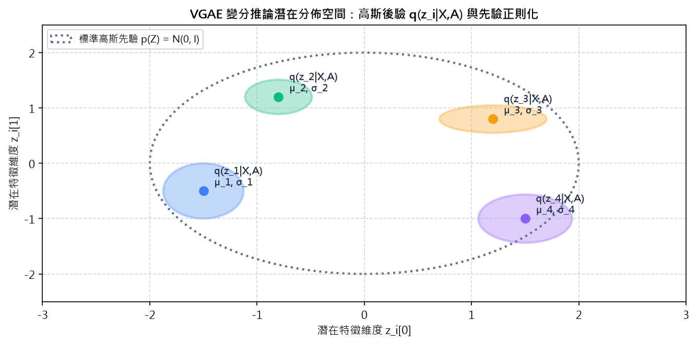
示意圖解：請對照 B0 準則（遮住文字仍能看出因果/機制對比）。
🤖 AI 生圖可用：重繪此示意圖的提示詞（結構化）
【中文提示詞】
3D 統計流形圖，展示變分圖自動編碼器（VGAE）的連續高斯分佈取樣過程。潛在幾何空間中每個圖節點不再是單一孤立點，而是呈現為帶有半透明不確定性橢球體（高斯均值 μ 與方差 σ^2）的概率雲，通過重參數化技巧採樣生成潛在變量 z。科研數學可視化風格、8k。
【English Prompt (Midjourney v6 / DALL-E 3)】
3D statistical manifold visualizing Variational Graph Autoencoder (VGAE) latent distribution. Nodes mapped not as single points but as semi-transparent glowing probabilistic Gaussian ellipsoids (mean mu and variance sigma^2) in a latent continuous space, with latent vectors z sampled via reparameterization trick, sophisticated scientific elegance, 8k --ar 16:9 --v 6.0
互動 demo：變分圖自動編碼器（VGAE）高斯潛在分佈與重參數化採樣
變分後驗 $q(\boldsymbol{z}_i|\boldsymbol{X},\boldsymbol{A}) = \mathcal{N}(\boldsymbol{\mu}_i, \operatorname{diag}(\boldsymbol{\sigma}_i^2))$，重參數化採樣 $\boldsymbol{z}_i = \boldsymbol{\mu}_i + \boldsymbol{\sigma}_i \odot \boldsymbol{\epsilon}$ (其中 $\boldsymbol{\epsilon} \sim \mathcal{N}(\boldsymbol{0}, \boldsymbol{I})$)，損失含 KL 散度約束 $\mathcal{D}_{KL}(q\|p)$。
怎麼操作： 調整變分均值 $\boldsymbol{\mu}$ 與方差 $\boldsymbol{\sigma}$，點擊「隨機採樣 (Sample Noise)」按鈕生成新的噪聲向量 $\boldsymbol{\epsilon}$，觀察潛在空間採樣雲與重構連通性波動。
觀察什麼： 較大的方差 $\boldsymbol{\sigma}$ 會擴大不確定性置信橢圓，生成具有多樣性的圖結構；KL 散度正則項迫使各節點分佈靠近標準高斯分佈 $\mathcal{N}(\boldsymbol{0}, \boldsymbol{I})$，避免潛在空間過擬合與崩塌。
正確基準： 重參數化技巧將隨機性轉移至獨立輸入噪聲 $\boldsymbol{\epsilon}$，使得整個神經網路的梯度可以通過 $\boldsymbol{\mu}$ 與 $\boldsymbol{\sigma}$ 順利反向傳播。
均值中心間距 $\Delta\mu$： 1.5 變分標準差 $\sigma$： 0.4 🎲 隨機重參數化採樣
變分圖自編碼器（Variational Graph Autoencoder, VGAE, Kipf & Welling, 2016） 將變分推論（Variational Inference）引入圖領域，將節點表徵建模為連續機率分佈。
雙頭 GCN 變分編碼器 ：
第一層共享特徵提取：$\boldsymbol{H}^{(1)} = \operatorname{ReLU}(\bar{\boldsymbol{L}} \boldsymbol{X} \boldsymbol{\Theta}_1)$。
第二層雙頭分別預測潛在均值 $\boldsymbol{\mu}$ 與對數變異數 $\log \boldsymbol{\sigma}$：
$$\boldsymbol{\mu} = \bar{\boldsymbol{L}} \boldsymbol{H}^{(1)} \boldsymbol{\Theta}_2, \quad \log \boldsymbol{\sigma} = \bar{\boldsymbol{L}} \boldsymbol{H}^{(1)} \boldsymbol{\Theta}_3$$
高斯變分後驗分佈 ：$q(\boldsymbol{Z} \mid \boldsymbol{X}, \boldsymbol{A}) = \prod_{i=1}^n \mathcal{N}(\boldsymbol{z}_i \mid \boldsymbol{\mu}_i, \operatorname{diag}(\boldsymbol{\sigma}_i^2))$。採用再參數化技巧（Reparameterization Trick） ：$\boldsymbol{z}_i = \boldsymbol{\mu}_i + \boldsymbol{\sigma}_i \odot \boldsymbol{\epsilon}$（$\boldsymbol{\epsilon} \sim \mathcal{N}(\mathbf{0}, \boldsymbol{I})$）。
目標函數：最大化證據下界（ELBO） ：
$$\mathcal{L}_{\text{ELBO}} = \mathbb{E}_{q(\boldsymbol{Z}\mid\boldsymbol{X},\boldsymbol{A})}[\log p(\boldsymbol{A}\mid\boldsymbol{Z})] - \operatorname{KL}\big(q(\boldsymbol{Z}\mid\boldsymbol{X},\boldsymbol{A}) \,\|\, p(\boldsymbol{Z})\big)$$
第一項為生成圖重構似然，第二項為後驗分佈與標準高斯先驗 $p(\boldsymbol{Z}) = \mathcal{N}(\mathbf{0}, \boldsymbol{I})$ 之間的 KL 散度正則化項。
祕笈 教授祕笈：變分圖自動編碼器（VGAE）高斯潛在流形與重參數化採樣
8
圖神經網路總結、過平滑挑戰與現代演進（Conclusion: Oversmoothing, Graph Transformers & Future Horizons）
−
圖神經網路（GNN）四大前沿領域與工業級落地應用
1. 生物醫藥與化學
分子圖結構建模：
• 節點：原子 (C, H, O)
• 邊：化學鍵 (單/雙/芳香)
核心應用：
• 新藥分子活性篩選
• AlphaFold 蛋白質折疊
• 毒性與水溶性預測
2. 社交與推薦系統
二部圖與社交拓撲：
• 節點：用戶 / 商品
• 邊：點擊/購買/好友
核心應用：
• PinSage 億級圖推薦
• 社群分群與好友推薦
• 影響力最大化傳播
3. 金融風控與反洗錢
交易網路異常偵測：
• 節點：銀行帳戶/卡號
• 邊：資金轉帳流水
核心應用：
• 循環轉帳洗錢團夥識別
• 信用卡盜刷即時阻截
• 虛假交易與刷單檢測
4. 知識圖譜與程式碼
實體關係與語法圖：
• 節點：實體 / AST 節點
• 邊：謂詞關係 / 控制流
核心應用：
• 知識推理與關係補全
• 程式碼漏洞檢測分析
• 交通流量時空預測
示意圖解（架構/流程向量圖）。
🤖 AI 生圖可用：重繪此示意圖的提示詞（結構化）
【中文提示詞】
3D 宏觀全景圖，展示圖神經網路（GNN）在真實世界中的四大核心落地場景：立體化學分子鍵結（新藥篩選）、全球社交推薦關係網、金融反洗錢交易拓撲、以及大型知識圖譜推理事實。各場景以發光全息投影模組圍繞中心 AI 圖神經核心旋轉，充滿未來主義與宏大科技感。8k。
【English Prompt (Midjourney v6 / DALL-E 3)】
Grand 3D isometric panoramic showcase of Graph Neural Network (GNN) real-world applications: 3D chemical molecular drug synthesis, global social recommendation networks, financial anti-money laundering transaction graphs, and multi-relational knowledge graphs. Floating holographic projection modules revolving around a central glowing GNN neural core, epic futuristic aesthetic, 8k --ar 16:9 --v 6.0
圖神經網路成功將深度學習強大的表徵能力拓展至任意非歐幾里得關係資料中，形成了由頻譜法（ChebNet）到空間訊息傳遞法（GCN, GAT, GAE）的完整理論體系。
本章核心演進脈絡 ：
頻譜圖論奠基（§2–§3） ：從圖拉普拉斯矩陣與圖傅立葉轉換出發，經歷 ChebNet 切比雪夫多項式近似，擺脫 $\mathcal{O}(n^3)$ 矩陣分解。空間訊息傳遞標準化（§4–§5） ：GCN 提出一階截斷與自環重正規化，確立了局部鄰居聚合＋線性投影的通用計算範式。動態注意力與無監督表徵（§6–§7） ：GAT 引入自適應內容邊權重；GAE/VGAE 利用內積解碼重構圖拓撲，實現自監督圖結構學習。
現代前沿發展（2025+） ：
突破過平滑（Oversmoothing）與過擠壓（Oversquashing） ：引入狄利克雷能量正則化、曲率約束（Ricci Curvature）與動態圖剪枝。Graph Transformers（如 Graphormer） ：結合全圖注意力與空間編碼（Spatial Encoding）、度數編碼與邊特徵編碼，打破 $k$-跳局部性限制。等變圖神經網路（Equivariant GNNs / SE(3)-GNNs） ：在 3D 分子幾何構型、蛋白質摺疊預測（AlphaFold）與藥物晶體生成中成為主流基石。
祕笈 教授祕笈：圖神經網路前沿工業應用與全景知識體系
教授祕笈：圖結構表示法、鄰接矩陣與非歐氏拓撲特性
1. 問題意識（Why & What）
傳統深度學習（如 CNN 與 RNN）強烈依賴於「歐幾里得空間（Euclidean Space）」的規律網格結構——影像具有上下左右固定的 2D 像素矩陣，音訊具有嚴格前後順序的 1D 時間序列。然而，真實世界中大量關鍵數據（如社交網路、化學分子鍵結、電網拓撲、論文引用網路）皆屬於「非歐幾里得空間（Non-Euclidean Space）」的任意拓撲圖 $\mathcal{G}(\mathcal{V}, \mathcal{E})$。如果直接硬套標準 CNN 卷積核，會立刻面臨「鄰居數量不固定」、「節點排列無序（Permutation Equivariance）」以及「無全局空間座標系」的三大致命瓶頸！
2. 核心直覺（Intuition）
想像班上的座位表。如果全班排成整齊的 6 排 8 列（歐氏網格），每個人的左右前後位置一目了然，老師可以用「3x3 濾鏡」掃描全班。但如果是課堂自由討論分組（任意圖結構），每個人可能跟 2 個、5 個甚至 10 個人聊天，彼此連線錯綜複雜。此時你無法用一個固定形狀的框框去套所有人，必須改用「鄰接矩陣 $\boldsymbol{A}$」記錄誰跟誰是朋友，並用「度數矩陣 $\boldsymbol{D}$」記錄每個人到底有多少個朋友。
3. 數學定義與推導（Formal Definition & Derivation）
設圖 $\mathcal{G} = (\mathcal{V}, \mathcal{E})$，節點集合 $|\mathcal{V}| = n$，邊集合 $|\mathcal{E}| = m$：
鄰接矩陣（Adjacency Matrix）$\boldsymbol{A} \in \mathbb{R}^{n \times n}$ ：
$$A_{ij} = \begin{cases} 1, & \text{若 } (v_i, v_j) \in \mathcal{E} \\ 0, & \text{其他} \end{cases}$$
對於無向圖，$\boldsymbol{A} = \boldsymbol{A}^\top$ 為實對稱矩陣。
度數矩陣（Degree Matrix）$\boldsymbol{D} \in \mathbb{R}^{n \times n}$ ：為對角矩陣，其對角元為節點 $i$ 相連的邊數：
$$D_{ii} = d_i = \sum_{j=1}^n A_{ij}, \quad D_{ij} = 0 \quad (i \neq j)$$
排列不變性（Permutation Invariance） ：對任意排列矩陣 $\boldsymbol{P} \in \{0, 1\}^{n \times n}$，重新編號後的鄰接矩陣變為 $\boldsymbol{A}' = \boldsymbol{P}\boldsymbol{A}\boldsymbol{P}^\top$，圖本質拓撲結構不變。
4. 機制運作拆解（Step-by-step Mechanism）
節點與特徵初始化 ：每個節點 $v_i$ 攜帶自身特徵向量 $\boldsymbol{x}_i \in \mathbb{R}^d$，組成全局特徵矩陣 $\boldsymbol{X} \in \mathbb{R}^{n \times d}$。拓撲關係矩陣化 ：將邊的連接關係編碼為二元矩陣 $\boldsymbol{A}$。度數統計與對角化 ：沿著 $\boldsymbol{A}$ 的每一列（row）加總求和，填入對角矩陣 $\boldsymbol{D}$。圖結構驗證 ：檢查矩陣對稱性（無向圖）、是否存在自環（對角線是否全為 0）以及圖的連通分量個數。
5. 數值範例（Concrete Numerical Example）
考慮 4 個節點的鏈狀圖 $v_1 - v_2 - v_3 - v_4$：
鄰接矩陣 $\boldsymbol{A}$：
$$\boldsymbol{A} = \begin{bmatrix} 0 & 1 & 0 & 0 \\ 1 & 0 & 1 & 0 \\ 0 & 1 & 0 & 1 \\ 0 & 0 & 1 & 0 \end{bmatrix}$$
度數計算：$d_1 = 1, d_2 = 2, d_3 = 2, d_4 = 1$。
度數矩陣 $\boldsymbol{D}$：
$$\boldsymbol{D} = \begin{bmatrix} 1 & 0 & 0 & 0 \\ 0 & 2 & 0 & 0 \\ 0 & 0 & 2 & 0 \\ 0 & 0 & 0 & 1 \end{bmatrix}$$
6. 對比分析（Comparative Analysis）
維度
歐幾里得網格數據（影像/語音）
非歐幾里得圖數據（GNN）
拓撲結構 規則 1D/2D 網格，空間平移不變
任意不規則拓撲，節點排列對稱
鄰居數量 嚴格固定（影像 4 或 8 鄰域）
動態可變（從 0 到數萬個度數）
卷積核設計 固定尺寸的幾何滑窗 $K \times K$
需基於鄰接矩陣或頻譜變換的聚合算子
典型模型 2D-CNN, ResNet, ViT
GCN, GAT, MPNN, GAE
7. 極端情況與邊界條件（Edge Cases & Corner Conditions）
孤立節點（Isolated Nodes） ：若節點 $i$ 無任何連接，其度數 $d_i = 0$，此時計算度數逆矩陣 $\boldsymbol{D}^{-1}$ 會產生除以零錯誤，實務上需透過自環（Self-loop）$\tilde{\boldsymbol{A}} = \boldsymbol{A} + \boldsymbol{I}$ 補全度數。完全圖（Complete Graph $K_n$） ：所有節點互相連接，$\boldsymbol{A} = \boldsymbol{J} - \boldsymbol{I}$，度數皆為 $n-1$。百萬級大型圖 ：鄰接矩陣 $\boldsymbol{A}$ 極度稀疏（稀疏度 $> 99.9\%$），實務上嚴禁使用密集二維陣列儲存，必須採用 COO 或 CSR 稀疏矩陣格式。
8. 常見迷思與踩坑點（Common Pitfalls & Misconceptions）
迷思一：節點編號 1, 2, 3... 的順序會影響學習結果？ 錯！合法的圖神經網路必須具備排列等變性（Permutation Equivariance），無論你如何重新編號節點矩陣，輸出的特徵向量也會相應排列，模型預測結果完全一致。迷思二：有向圖與無向圖可以直接混用相同公式？ 錯！無向圖的 $\boldsymbol{A}$ 是實對稱矩陣，保證具備實數特徵值與正交特徵向量；有向圖的 $\boldsymbol{A}$ 非對稱，其特徵值可能為複數，需要進行雙向拆解或轉為 PageRank 轉移矩陣。
9. 前沿延伸與工業落地（Advanced Extensions & Industry Practice）
在大規模圖機器學習框架（如 PyG, DGL）中，圖結構統一採用邊索引張量 edge_index（形狀為 [2, |E|]）來高效儲存圖拓撲，搭配 GPU 上的 Scatter/Gather 算子，能夠將億級節點的鄰接計算加速百倍以上。
10. 一分鐘記憶法寶（Takeaway & Mental Model）
「網格有規矩，圖譜無拘束；鄰接記連線，度數算朋友！」
教授祕笈：圖拉普拉斯矩陣（Graph Laplacian）與三大正規化矩陣
1. 問題意識（Why & What）
在微積分中，拉普拉斯算子 $\Delta = \nabla^2 f$ 度量了函數在一點的「局域曲率」或「該點數值與周圍平均值的差異」。在離散圖上，我們如何定義一個算子，既能精確反映節點信號在圖結構上的平滑度（Smoothness），又能為圖上的傅立葉分析提供正交基底？非正規化拉普拉斯矩陣 $\boldsymbol{L} = \boldsymbol{D} - \boldsymbol{A}$ 應運而生！但當節點度數懸殊時，未正規化 $\boldsymbol{L}$ 會導致大度數節點主導數值，因此必須進一步推導對稱正規化與隨機遊走正規化矩陣。
2. 核心直覺（Intuition）
想像一張彈簧床網，每個節點的高低代表信號數值 $x_i$。如果節點 $i$ 比周圍所有鄰居都高很多，彈簧拉力就會把它往下扯；拉力的大小正比於「自身高度乘上鄰居數量，減去所有鄰居的高度總和」——這就是 $(\boldsymbol{D}\boldsymbol{x} - \boldsymbol{A}\boldsymbol{x})_i = (\boldsymbol{L}\boldsymbol{x})_i$！拉普拉斯二次型 $\boldsymbol{x}^\top \boldsymbol{L} \boldsymbol{x} = \frac{1}{2}\sum (x_i - x_j)^2$ 衡量了整張圖信號的「總起伏能量」。
3. 數學定義與推導（Formal Definition & Derivation）
1. 非正規化拉普拉斯矩陣（Unnormalized Laplacian）
$$\boldsymbol{L} = \boldsymbol{D} - \boldsymbol{A}$$
對角元 $L_{ii} = d_i$，非對角元 $L_{ij} = -A_{ij}$。
二次型推導：
$$\boldsymbol{x}^\top \boldsymbol{L}\boldsymbol{x} = \sum_{i=1}^n d_i x_i^2 - \sum_{i,j} A_{ij} x_i x_j = \frac{1}{2}\sum_{i,j} A_{ij}(x_i - x_j)^2 \ge 0$$
性質：$\boldsymbol{L}$ 是半正定矩陣（Symmetric Positive Semi-Definite），其特徵值全為非負實數 $0 = \lambda_1 \le \lambda_2 \le \dots \le \lambda_n$。
2. 對稱正規化拉普拉斯矩陣（Symmetric Normalized Laplacian）
$$\boldsymbol{L}_{sym} = \boldsymbol{D}^{-1/2}\boldsymbol{L}\boldsymbol{D}^{-1/2} = \boldsymbol{I} - \boldsymbol{D}^{-1/2}\boldsymbol{A}\boldsymbol{D}^{-1/2}$$
其元素為：
$$(\boldsymbol{L}_{sym})_{ij} = \begin{cases} 1, & \text{若 } i = j \text{ 且 } d_i > 0 \\ -\frac{1}{\sqrt{d_i d_j}}, & \text{若 } (v_i, v_j) \in \mathcal{E} \\ 0, & \text{其他} \end{cases}$$
特徵值範圍嚴格落在 $[0, 2]$ 區間內。
3. 隨機遊走拉普拉斯矩陣（Random Walk Laplacian）
$$\boldsymbol{L}_{rw} = \boldsymbol{D}^{-1}\boldsymbol{L} = \boldsymbol{I} - \boldsymbol{D}^{-1}\boldsymbol{A}$$
4. 機制運作拆解（Step-by-step Mechanism）
構造度數矩陣 ：計算 $\boldsymbol{D} = \operatorname{diag}(\sum_j A_{ij})$。構造非正規化矩陣 ：$\boldsymbol{L} = \boldsymbol{D} - \boldsymbol{A}$。度數開根號取逆 ：計算 $\boldsymbol{D}^{-1/2} = \operatorname{diag}(1/\sqrt{d_1}, \dots, 1/\sqrt{d_n})$。雙側矩陣相乘 ：計算 $\boldsymbol{L}_{sym} = \boldsymbol{D}^{-1/2}\boldsymbol{L}\boldsymbol{D}^{-1/2}$。譜分解求解 ：對稱矩陣特徵分解 $\boldsymbol{L}_{sym} = \boldsymbol{U}\boldsymbol{\Lambda}\boldsymbol{U}^\top$。
5. 數值範例（Concrete Numerical Example）
考慮三角形圖 $K_3$（3 節點完全連接，每個節點度數 $d=2$）：
$\boldsymbol{A} = \begin{bmatrix} 0 & 1 & 1 \\ 1 & 0 & 1 \\ 1 & 1 & 0 \end{bmatrix}$，$\boldsymbol{D} = \begin{bmatrix} 2 & 0 & 0 \\ 0 & 2 & 0 \\ 0 & 0 & 2 \end{bmatrix}$。
$\boldsymbol{L} = \boldsymbol{D} - \boldsymbol{A} = \begin{bmatrix} 2 & -1 & -1 \\ -1 & 2 & -1 \\ -1 & -1 & 2 \end{bmatrix}$。
$\boldsymbol{D}^{-1/2} = \frac{1}{\sqrt{2}}\boldsymbol{I}$。
$\boldsymbol{L}_{sym} = \frac{1}{2}\boldsymbol{L} = \begin{bmatrix} 1 & -0.5 & -0.5 \\ -0.5 & 1 & -0.5 \\ -0.5 & -0.5 & 1 \end{bmatrix}$。
特徵值計算：$\boldsymbol{L}$ 特徵值為 $\{0, 3, 3\}$；$\boldsymbol{L}_{sym}$ 特徵值為 $\{0, 1.5, 1.5\}$，皆在 $[0, 2]$ 範圍內。
6. 對比分析（Comparative Analysis）
拉普拉斯矩陣類型
數學公式
對稱性
特徵值範圍
適用場景
未正規化 $\boldsymbol{L}$ $\boldsymbol{D} - \boldsymbol{A}$
實對稱
$[0, 2 d_{max}]$
圖論切割、經典譜聚類
對稱正規化 $\boldsymbol{L}_{sym}$ $\boldsymbol{D}^{-1/2}\boldsymbol{L}\boldsymbol{D}^{-1/2}$
實對稱
$[0, 2]$
GCN, ChebNet, 譜圖神經網路
隨機遊走 $\boldsymbol{L}_{rw}$ $\boldsymbol{D}^{-1}\boldsymbol{L}$
非對稱
$[0, 2]$
隨機遊走、PageRank、馬可夫鏈
7. 極端情況與邊界條件（Edge Cases & Corner Conditions）
非連通圖（Disconnected Graph） ：若圖由 $k$ 個獨立連通分量組成，則拉普拉斯矩陣特徵值 0 的重數恰好等於 $k$（$\lambda_1 = \dots = \lambda_k = 0$）。二分圖（Bipartite Graph） ：當且僅當圖為二分圖時，對稱正規化拉普拉斯矩陣的最大特徵值 $\lambda_n = 2.0$。
8. 常見迷思與踩坑點（Common Pitfalls & Misconceptions）
迷思一：拉普拉斯矩陣的所有行和（Row sum）在任何正規化下都是 0？ 錯！未正規化 $\boldsymbol{L}\boldsymbol{1} = \boldsymbol{0}$ 且隨機遊走 $\boldsymbol{L}_{rw}\boldsymbol{1} = \boldsymbol{0}$；但對稱正規化 $\boldsymbol{L}_{sym}$ 的行和不等於 0，而是 $(\boldsymbol{L}_{sym}\boldsymbol{D}^{1/2}\boldsymbol{1}) = \boldsymbol{0}$。迷思二：度數矩陣求逆時忽略了 0 度孤立節點？ 實務中如果圖存在孤立節點，必須對度數取 d_inv = np.power(d, -0.5); d_inv[np.isinf(d_inv)] = 0. 以防崩潰。
9. 前沿延伸與工業落地（Advanced Extensions & Industry Practice）
在圖譜聚類（Spectral Clustering）與社群發現演算法中，第二小特徵值 $\lambda_2$ 被稱為費德勒值（Fiedler value） ，對應的特徵向量（Fiedler vector）直接給出了整張圖最佳的二分切割（Min-Cut）邊界。
10. 一分鐘記憶法寶（Takeaway & Mental Model）
「拉普拉斯度減鄰，行和為零基底定；對稱除以根號度，特徵緊鎖零到二！」
教授祕笈：圖傅立葉變換（Graph Fourier Transform）與譜基底投影
1. 問題意識（Why & What）
在經典連續信號處理中，傅立葉變換將時域信號分解為正弦與餘弦波基底 $e^{-i\omega t}$。這些三角函數本質上是連續拉普拉斯算子 $\Delta = \frac{d^2}{dt^2}$ 的特徵函數（Eigenfunctions）。然而在任意拓撲圖上，沒有固定的時間軸或空間網格，我們該如何定義「圖上的頻率」與「圖上的傅立葉變換」？答案就是：利用圖拉普拉斯矩陣 $\boldsymbol{L}$ 的正交特徵向量基底 $\boldsymbol{U}$ 作為圖上的諧波基底！
2. 核心直覺（Intuition）
把圖上的信號想像成交響樂團在演奏。特徵值 $\lambda_1=0$ 對應「全圖齊聲低音吟唱」（所有相鄰節點數值相同，最平滑、頻率最低）；隨著特徵值 $\lambda_k$ 逐漸增大，對應的特徵向量 $\boldsymbol{u}_k$ 在相鄰節點間的符號交替跳變就越劇烈，代表「尖銳高頻刺耳聲」。圖傅立葉變換就是把節點信號拆解成各個頻率音符的強弱分量 $\hat{x}_k$！
3. 數學定義與推導（Formal Definition & Derivation）
因為對稱拉普拉斯矩陣 $\boldsymbol{L} \in \mathbb{R}^{n \times n}$ 為實對稱矩陣，根據譜定理，存在正交特徵矩陣 $\boldsymbol{U} = [\boldsymbol{u}_1, \dots, \boldsymbol{u}_n]$ 使得：
$$\boldsymbol{L} = \boldsymbol{U}\boldsymbol{\Lambda}\boldsymbol{U}^\top, \quad \boldsymbol{U}^\top \boldsymbol{U} = \boldsymbol{U}\boldsymbol{U}^\top = \boldsymbol{I}_n$$
其中 $\boldsymbol{\Lambda} = \operatorname{diag}(\lambda_1, \dots, \lambda_n)$ 且 $0 = \lambda_1 \le \lambda_2 \le \dots \le \lambda_n$。
正向圖傅立葉變換（Forward GFT） ：將空間域節點信號 $\boldsymbol{x} \in \mathbb{R}^n$ 投影到譜域：
$$\hat{\boldsymbol{x}} = \boldsymbol{U}^\top \boldsymbol{x} \iff \hat{x}_k = \boldsymbol{u}_k^\top \boldsymbol{x} = \sum_{i=1}^n u_{ki} x_i$$
逆向圖傅立葉變換（Inverse GFT） ：將頻譜係數重構回空間信號：
$$\boldsymbol{x} = \boldsymbol{U}\hat{\boldsymbol{x}} = \sum_{k=1}^n \hat{x}_k \boldsymbol{u}_k$$
狄利克雷能量與頻率詮釋 ：特徵向量 $\boldsymbol{u}_k$ 的圖變異度為：
$$\boldsymbol{u}_k^\top \boldsymbol{L} \boldsymbol{u}_k = \lambda_k = \frac{1}{2}\sum_{i,j} A_{ij}(u_{ki} - u_{kj})^2$$
$\lambda_k$ 越大，相鄰節點間基底數值差異越大，即頻率越高！
4. 機制運作拆解（Step-by-step Mechanism）
矩陣譜分解 ：對圖拉普拉斯矩陣 $\boldsymbol{L}$ 計算特徵值與特徵向量，依特徵值由小到大排序排列成 $\boldsymbol{U}$。正向變換投影 ：計算矩陣向量積 $\hat{\boldsymbol{x}} = \boldsymbol{U}^\top \boldsymbol{x}$，獲得頻譜強度分佈。頻譜域分析/處理 ：檢視信號能量主要集中在低頻區間（平滑）還是高頻區間（劇烈震盪）。精確逆變換重構 ：計算 $\boldsymbol{x} = \boldsymbol{U}\hat{\boldsymbol{x}}$，保證無失真重構。
5. 數值範例（Concrete Numerical Example）
考慮 2 節點圖 $v_1 - v_2$：
$\boldsymbol{L} = \begin{bmatrix} 1 & -1 \\ -1 & 1 \end{bmatrix}$。
特徵值：$\lambda_1 = 0, \lambda_2 = 2$。
標準正交特徵向量：
$$\boldsymbol{u}_1 = \begin{bmatrix} 1/\sqrt{2} \\ 1/\sqrt{2} \end{bmatrix} \text{ (低頻基底)}, \quad \boldsymbol{u}_2 = \begin{bmatrix} 1/\sqrt{2} \\ -1/\sqrt{2} \end{bmatrix} \text{ (高頻基底)}$$
若輸入平滑信號 $\boldsymbol{x} = [2, 2]^\top$：
$$\hat{\boldsymbol{x}} = \boldsymbol{U}^\top \boldsymbol{x} = \begin{bmatrix} 2\sqrt{2} \\ 0 \end{bmatrix} \implies \text{僅有低頻能量！}$$
若輸入高頻反差信號 $\boldsymbol{x} = [2, -2]^\top$：
$$\hat{\boldsymbol{x}} = \boldsymbol{U}^\top \boldsymbol{x} = \begin{bmatrix} 0 \\ 2\sqrt{2} \end{bmatrix} \implies \text{僅有高頻能量！}$$
6. 對比分析（Comparative Analysis）
概念
經典連續傅立葉變換
圖傅立葉變換（GFT）
定義域 連續實數軸 $t \in \mathbb{R}$
離散圖頂點集合 $v \in \mathcal{V}$
微分算子 $\Delta = -\frac{d^2}{dt^2}$
圖拉普拉斯矩陣 $\boldsymbol{L} = \boldsymbol{D} - \boldsymbol{A}$
基底函數 正弦/複指數波 $e^{i\omega t}$
拉普拉斯正交特徵向量 $\boldsymbol{u}_k$
頻率指標 角頻率 $\omega$
拉普拉斯特徵值 $\lambda_k$
能量守恆 $\int |f(t)|^2 dt = \int |\hat{f}(\omega)|^2 d\omega$
$\|\boldsymbol{x}\|^2 = \|\hat{\boldsymbol{x}}\|^2$ (帕塞瓦爾定理)
7. 極端情況與邊界條件（Edge Cases & Corner Conditions）
常數信號（Constant Signal $\boldsymbol{x} = c\boldsymbol{1}$） ：正向變換後僅在 $\lambda_1 = 0$ 處有非零數值 $\hat{x}_1 = c\sqrt{n}$，其餘所有高頻分量恆為 0。特徵值重根（Multiple Eigenvalues） ：若某特徵值有重根，對應的特徵子空間基底方向不唯一，需使用 Gram-Schmidt 正交化保持標準正交性。
8. 常見迷思與踩坑點（Common Pitfalls & Misconceptions）
迷思一：圖傅立葉變換可以直接推廣到動態變化圖？ 錯！特徵基底 $\boldsymbol{U}$ 嚴格綁定於特定圖的靜態拓撲 $\boldsymbol{L}$。只要圖加了一條邊，特徵基底就會完全改變，導致在圖 A 上學到的頻譜濾波器無法直接遷移到圖 B。迷思二：特徵向量的符號方向是唯一的？ 錯！特徵向量乘以 $-1$ 依然是合法的特徵向量，數值計算軟體給出的特徵向量符號可能存在任意翻轉，實務需固定基準節點符號。
9. 前沿延伸與工業落地（Advanced Extensions & Industry Practice）
圖信號處理（Graph Signal Processing, GSP）利用 GFT 進行圖上去噪（Graph Denoising）、圖半監督分類以及地鐵交通流量異常檢測。
10. 一分鐘記憶法寶（Takeaway & Mental Model）
「特徵向量為基底，投影即是傅立葉；特徵值大頻率高，帕塞瓦爾保能量！」
教授祕笈：頻譜圖卷積（Spectral Graph Convolution）與頻率濾波器
1. 問題意識（Why & What）
在卷積神經網路（CNN）中，卷積定理（Convolution Theorem）指出：「空間域的卷積等於頻率域的逐點相乘」—— $\mathcal{F}(f * g) = \mathcal{F}(f) \cdot \mathcal{F}(g)$。由於圖拓撲上缺乏規則空間滑窗，Bruna 等人（2014）巧妙利用卷積定理逆向定義了頻譜圖卷積（Spectral Graph Convolution） ：先將圖信號轉換到頻譜域，與可學習濾波器相乘後，再逆變換回空間域！
2. 核心直覺（Intuition）
想像你用 Photoshop 給照片加濾鏡。傳統方法是在像素周圍滑動一個小方框（空間卷積）。頻譜圖卷積的思路則是：把整張圖送到「音訊等化器（Equalizer）」中，你可以拉高低音推桿（低通濾波：讓全圖平滑一致），或者拉高高音推桿（高通濾波：強化相鄰節點的反差銳利度），調完後再一鍵重構成新的空間圖信號！
3. 數學定義與推導（Formal Definition & Derivation）
頻譜圖卷積公式 ：
設輸入信號為 $\boldsymbol{x} \in \mathbb{R}^n$，圖濾波器為 $\boldsymbol{g} \in \mathbb{R}^n$，其卷積定義為：
$$\boldsymbol{x} *_{\mathcal{G}} \boldsymbol{g} = \boldsymbol{U}\left( (\boldsymbol{U}^\top \boldsymbol{g}) \odot (\boldsymbol{U}^\top \boldsymbol{x}) \right)$$
對角矩陣化表達 ：
定義頻譜濾波矩陣 $\boldsymbol{G} = \operatorname{diag}(\hat{g}_1, \dots, \hat{g}_n) = \operatorname{diag}(\boldsymbol{U}^\top \boldsymbol{g})$，則卷積簡化為優雅的矩陣相乘：
$$\boldsymbol{x} *_{\mathcal{G}} \boldsymbol{g} = \boldsymbol{U}\boldsymbol{G}\boldsymbol{U}^\top \boldsymbol{x}$$
參數化濾波器 ：
將濾波器定義為拉普拉斯特徵值的連續函數 $g_\theta(\boldsymbol{\Lambda}) = \operatorname{diag}(g_\theta(\lambda_1), \dots, g_\theta(\lambda_n))$，卷積算子寫為：
$$\boldsymbol{x} *_{\mathcal{G}} g_\theta = \boldsymbol{U} g_\theta(\boldsymbol{\Lambda}) \boldsymbol{U}^\top \boldsymbol{x}$$
4. 機制運作拆解（Step-by-step Mechanism）
步驟 1（正向 GFT） ：計算 $\hat{\boldsymbol{x}} = \boldsymbol{U}^\top \boldsymbol{x}$，將信號解構成頻譜分量。步驟 2（頻率濾波） ：計算 $\hat{\boldsymbol{y}} = \boldsymbol{G}\hat{\boldsymbol{x}}$，以學習到的頻譜權重調節各頻段響應。步驟 3（逆向 GFT） ：計算 $\boldsymbol{y} = \boldsymbol{U}\hat{\boldsymbol{y}} = \boldsymbol{U}\boldsymbol{G}\boldsymbol{U}^\top \boldsymbol{x}$，重構出濾波後的節點特徵。步驟 4（非線性激活） ：通過 ReLU 或 Sigmoid 進行非線性映射 $\boldsymbol{h} = \sigma(\boldsymbol{y})$。
5. 數值範例（Concrete Numerical Example）
考慮 2 節點圖，基底 $\boldsymbol{U} = \frac{1}{\sqrt{2}}\begin{bmatrix} 1 & 1 \\ 1 & -1 \end{bmatrix}$，輸入信號 $\boldsymbol{x} = [3, 1]^\top$：
步驟 1（GFT）：
$$\hat{\boldsymbol{x}} = \boldsymbol{U}^\top \boldsymbol{x} = \frac{1}{\sqrt{2}}\begin{bmatrix} 3+1 \\ 3-1 \end{bmatrix} = \begin{bmatrix} 2\sqrt{2} \\ \sqrt{2} \end{bmatrix}$$
步驟 2（設計低通濾波器 $\boldsymbol{G} = \operatorname{diag}(2.0, 0.0)$）：
$$\hat{\boldsymbol{y}} = \boldsymbol{G}\hat{\boldsymbol{x}} = \begin{bmatrix} 4\sqrt{2} \\ 0 \end{bmatrix}$$
步驟 3（逆 GFT）：
$$\boldsymbol{y} = \boldsymbol{U}\hat{\boldsymbol{y}} = \frac{1}{\sqrt{2}}\begin{bmatrix} 1 & 1 \\ 1 & -1 \end{bmatrix}\begin{bmatrix} 4\sqrt{2} \\ 0 \end{bmatrix} = \begin{bmatrix} 4 \\ 4 \end{bmatrix}$$
結果解讀：高頻差異完全被過濾消除，兩個節點數值達到完全一致平滑！
6. 對比分析（Comparative Analysis）
卷積模式
原始頻譜圖卷積（Spectral CNN）
現代空間圖卷積（GCN/GAT）
計算核心 $\boldsymbol{U}\boldsymbol{G}\boldsymbol{U}^\top \boldsymbol{x}$
局部度數/注意力鄰域加權聚合
計算複雜度 $\mathcal{O}(n^3)$（特徵分解）+ $\mathcal{O}(n^2)$
$\mathcal{O}(|\mathcal{E}|)$（稀疏線性時間）
參數數量 $\mathcal{O}(n)$（隨節點數線性增加，易過擬合）
$\mathcal{O}(d \times d')$（與圖大小無關）
空間局部性 非局部（Non-localized，全圖廣域）
嚴格 1-hop 局部感受野
跨圖遷移性 差（無法遷移到不同拓撲的新圖）
優（完美支持歸納學習 Inductive Learning）
7. 極端情況與邊界條件（Edge Cases & Corner Conditions）
全通濾波器（All-pass Filter $\boldsymbol{G} = \boldsymbol{I}$） ：$\boldsymbol{U}\boldsymbol{I}\boldsymbol{U}^\top \boldsymbol{x} = \boldsymbol{x}$，信號無任何改變。全零濾波器（$\boldsymbol{G} = \boldsymbol{0}$） ：輸出恆為零向量。
8. 常見迷思與踩坑點（Common Pitfalls & Misconceptions）
迷思：原始頻譜圖卷積可以直接用在百萬節點的大圖上？ 絕對不行！對 $n = 10^6$ 的大圖進行特徵值分解需要數百 GB 記憶體與數小時計算，且 $\boldsymbol{U}$ 是稠密矩陣，儲存代價高達 $10^{12}$ 元素！正是這個缺陷催生了 ChebNet 與 GCN 的多項式近似革命。
9. 前沿延伸與工業落地（Advanced Extensions & Industry Practice）
頻譜圖卷積奠定了所有現代 GNN 的數學基石，其頻譜濾波理論至今仍廣泛應用於天文物理重力透鏡信號分析與腦神經電位圖（EEG）圖頻譜濾波。
10. 一分鐘記憶法寶（Takeaway & Mental Model）
「正變換進頻域，對角矩陣乘濾波；逆變換回空間，頻譜卷積三部曲！」
教授祕笈：ChebNet 切比雪夫多項式近似與局部 $K$-hop 展開
1. 問題意識（Why & What）
原始頻譜圖卷積雖然理論優雅，但存在兩大致命硬傷：(1) 特徵分解複雜度高達 $\mathcal{O}(n^3)$；(2) 濾波器不具備空間局部性（Localized Receptive Field）。Defferrard 等人（2016）提出的 ChebNet 橫空出世，利用正交多項式領域著名的切比雪夫多項式（Chebyshev Polynomials） 截斷展開，巧妙避開了特徵值分解，並嚴格證明了 $K$ 階多項式必然限制在空間 $K$-hop 鄰域內！
2. 核心直覺（Intuition）
想像你要用計算機算 $\sin(x)$，你不需要每次都去解微分方程，而是用泰勒級數或多項式近似。ChebNet 也是同樣的道理：把複雜的矩陣函數 $g_\theta(\boldsymbol{L})$ 近似為拉普拉斯矩陣的多項式 $\sum_{k=0}^K \theta_k \boldsymbol{L}^k$。因為 $\boldsymbol{L}$ 相乘一次代表信號沿著邊傳遞 1 步，所以 $\boldsymbol{L}^K$ 就保證了訊息最多只傳播到 $K$-hop 鄰居，就像在圖上畫出半徑為 $K$ 的同心圓！
3. 數學定義與推導（Formal Definition & Derivation）
正規化拉普拉斯矩陣 ：
切比雪夫多項式的正交定義區間為 $[-1, 1]$，因此需將特徵值範圍 $[0, \lambda_{max}]$ 縮放平移：
$$\tilde{\boldsymbol{L}} = \frac{2}{\lambda_{max}}\boldsymbol{L} - \boldsymbol{I}_n$$
其特徵值嚴格落在 $[-1, 1]$ 區間內。
切比雪夫多項式遞迴定義 ：
$$T_0(x) = 1, \quad T_1(x) = x, \quad T_k(x) = 2x T_{k-1}(x) - T_{k-2}(x)$$
ChebNet 卷積核 ：
$$g_\theta * \boldsymbol{x} \approx \sum_{k=0}^K \theta_k T_k(\tilde{\boldsymbol{L}})\boldsymbol{x}$$
其中 $\theta_k$ 為可學習的切比雪夫多項式係數。
局部性定理（Localization Property） ：
由於 $(\boldsymbol{L}^k)_{ij} = 0$ 當且僅當節點 $i$ 與 $j$ 的最短路徑距離大於 $k$，因此 $T_K(\tilde{\boldsymbol{L}})$ 是嚴格的 $K$-hop 局部卷積核！
4. 機制運作拆解（Step-by-step Mechanism）
估算最大特徵值 ：利用冪法（Power Iteration）快速估算 $\lambda_{max} \approx 2.0$。計算縮放矩陣 ：$\tilde{\boldsymbol{L}} = \frac{2}{\lambda_{max}}\boldsymbol{L} - \boldsymbol{I}$。三項遞迴計算矩陣向量積 ：
- $\boldsymbol{z}_0 = \boldsymbol{x}$
- $\boldsymbol{z}_1 = \tilde{\boldsymbol{L}}\boldsymbol{x}$
- 對 $k=2 \dots K$：$\boldsymbol{z}_k = 2\tilde{\boldsymbol{L}}\boldsymbol{z}_{k-1} - \boldsymbol{z}_{k-2}$加權求和輸出 ：$\boldsymbol{y} = \sum_{k=0}^K \theta_k \boldsymbol{z}_k$。
5. 數值範例（Concrete Numerical Example）
考慮 $\tilde{\boldsymbol{L}} = \begin{bmatrix} 0 & 0.5 \\ 0.5 & 0 \end{bmatrix}$，輸入 $\boldsymbol{x} = [1, 0]^\top$，多項式階數 $K=2$，係數 $\theta = [1.0, 0.5, 0.2]$：
$T_0(\tilde{\boldsymbol{L}})\boldsymbol{x} = \boldsymbol{x} = \begin{bmatrix} 1 \\ 0 \end{bmatrix}$
$T_1(\tilde{\boldsymbol{L}})\boldsymbol{x} = \tilde{\boldsymbol{L}}\boldsymbol{x} = \begin{bmatrix} 0 \\ 0.5 \end{bmatrix}$
$T_2(\tilde{\boldsymbol{L}})\boldsymbol{x} = 2\tilde{\boldsymbol{L}}(\tilde{\boldsymbol{L}}\boldsymbol{x}) - \boldsymbol{x} = 2\begin{bmatrix} 0.25 \\ 0 \end{bmatrix} - \begin{bmatrix} 1 \\ 0 \end{bmatrix} = \begin{bmatrix} -0.5 \\ 0 \end{bmatrix}$
加權求和：
$$\boldsymbol{y} = 1.0\begin{bmatrix} 1 \\ 0 \end{bmatrix} + 0.5\begin{bmatrix} 0 \\ 0.5 \end{bmatrix} + 0.2\begin{bmatrix} -0.5 \\ 0 \end{bmatrix} = \begin{bmatrix} 0.9 \\ 0.25 \end{bmatrix}$$
6. 對比分析（Comparative Analysis）
特性
頻譜 CNN（Spectral CNN）
ChebNet（切比雪夫網絡）
計算方式 稠密特徵分解 $\boldsymbol{U}\boldsymbol{G}\boldsymbol{U}^\top$
稀疏多項式遞迴 $T_k(\tilde{\boldsymbol{L}})\boldsymbol{x}$
時間複雜度 $\mathcal{O}(n^3)$
$\mathcal{O}(K |\mathcal{E}|)$（與邊數線性相關）
感受野範圍 全局無界
嚴格 $K$-hop 局部感受野
參數數量 $n$（與圖大小綁定）
$K+1$（超輕量）
7. 極端情況與邊界條件（Edge Cases & Corner Conditions）
階數 $K=0$ ：卷積退化為單純的標量縮放 $\theta_0 \boldsymbol{x}$，完全不與任何鄰居通訊。階數 $K=1$ ：卷積僅涵蓋 1-hop 直接鄰居，這正是下一節 GCN 誕生的出發點！
8. 常見迷思與踩坑點（Common Pitfalls & Misconceptions）
迷思：階數 $K$ 越大效果越好？ 錯！當 $K \ge 4$ 時，不僅計算量上升，還容易發生過度平滑（Over-smoothing） 現象，使不同節點的特徵完全同質化，且多項式階數過高時邊界數值容易震盪（Runge 現象）。
9. 前沿延伸與工業落地（Advanced Extensions & Industry Practice）
ChebNet 的思想被廣泛擴展為 CayleyNet（利用 Cayley 變換近似有理濾波器）以及 LanczosNet（利用 Krylov 子空間近似超大圖頻譜響應）。
10. 一分鐘記憶法寶（Takeaway & Mental Model）
「切比雪夫三項推，免除特徵值分解；階數代表擴散步，稀疏乘法速度飛！」
教授祕笈：GCN 自環重正規化技巧（Renormalization Trick）與譜半徑收斂
1. 問題意識（Why & What）
Kipf & Welling（ICLR 2017）在 ChebNet 的基礎上大膽簡化：取多項式階數 $K=1$，並假設最大特徵值 $\lambda_{max} \approx 2$。此時一階卷積矩陣為 $\boldsymbol{I}_n + \boldsymbol{D}^{-1/2}\boldsymbol{A}\boldsymbol{D}^{-1/2}$。然而，這個矩陣的特徵值範圍落在 $[0, 2]$！當神經網路堆疊多層（如 $L=5$）時，最大特徵值 $2^L = 32$ 會引發劇烈的數值發散與梯度爆炸 ！如何用最優雅的方式將特徵值嚴格約束在穩定區間？著名的重正規化技巧（Renormalization Trick） 由此誕生！
2. 核心直覺（Intuition）
想像玩傳話遊戲。如果你只聽別人的話而忘記自己原本知道的資訊（沒有自環），傳幾輪後原始記憶就丟失了；但如果你把自己和別人的聲音直接相加（未重正規化），每傳一輪聲音音量就翻倍，最後全場只剩下刺耳的噪音（特徵爆炸）。GCN 的做法是：給每個人胸前戴一個麥克風（自環 $A+I$），然後根據「自己加所有鄰居的總人數」對音量進行精確縮放（對稱歸一化），確保聲音永遠平穩傳遞！
3. 數學定義與推導（Formal Definition & Derivation）
一階 ChebNet 簡化 ：
設 $K=1, \lambda_{max}=2, \theta = \theta_0 = -\theta_1$，則：
$$g_\theta * \boldsymbol{X} \approx \theta \left( \boldsymbol{I}_n + \boldsymbol{D}^{-1/2}\boldsymbol{A}\boldsymbol{D}^{-1/2} \right) \boldsymbol{X}$$
特徵值發散問題 ：
矩陣 $\boldsymbol{I}_n + \boldsymbol{D}^{-1/2}\boldsymbol{A}\boldsymbol{D}^{-1/2}$ 的特徵值為 $1 + (1 - \lambda_L) = 2 - \lambda_L \in [0, 2]$。重複相乘會使特徵範數按 $2^L$ 呈指數級放大。
重正規化技巧（Renormalization Trick） ：
引入帶自環的鄰接矩陣 $\tilde{\boldsymbol{A}}$ 與相應度數矩陣 $\tilde{\boldsymbol{D}}$：
$$\tilde{\boldsymbol{A}} = \boldsymbol{A} + \boldsymbol{I}_n, \quad \tilde{D}_{ii} = \sum_{j=1}^n \tilde{A}_{ij} = d_i + 1$$
以對稱正規化代替直接相加：
$$\boldsymbol{I}_n + \boldsymbol{D}^{-1/2}\boldsymbol{A}\boldsymbol{D}^{-1/2} \longrightarrow \tilde{\boldsymbol{D}}^{-1/2}\tilde{\boldsymbol{A}}\tilde{\boldsymbol{D}}^{-1/2}$$
GCN 單層完整傳播公式 ：
$$\boldsymbol{H}^{(l+1)} = \sigma\left( \tilde{\boldsymbol{D}}^{-1/2}\tilde{\boldsymbol{A}}\tilde{\boldsymbol{D}}^{-1/2} \boldsymbol{H}^{(l)} \boldsymbol{\Theta}^{(l)} \right)$$
其中 $\boldsymbol{\Theta}^{(l)} \in \mathbb{R}^{d_l \times d_{l+1}}$ 為可訓練權重矩陣，$\sigma(\cdot)$ 為非線性激活函數（如 ReLU）。
4. 機制運作拆解（Step-by-step Mechanism）
添加自環 ：$\tilde{\boldsymbol{A}} = \boldsymbol{A} + \boldsymbol{I}_n$（保證節點更新時能保留自身特徵）。更新度數 ：計算包含自環後的度數 $\tilde{d}_i = d_i + 1$。對稱歸一化矩陣 ：計算權重 $\hat{A}_{ij} = \frac{1}{\sqrt{(d_i+1)(d_j+1)}}$。特徵變換與聚合 ：
- 先特徵變換：$\boldsymbol{Z} = \boldsymbol{H}^{(l)}\boldsymbol{\Theta}$。
- 再圖卷積聚合：$\boldsymbol{H}^{(l+1)} = \sigma(\hat{\boldsymbol{A}}\boldsymbol{Z})$。
5. 數值範例（Concrete Numerical Example）
考慮 2 節點圖 $v_1 - v_2$：
原始鄰接 $\boldsymbol{A} = \begin{bmatrix} 0 & 1 \\ 1 & 0 \end{bmatrix}$，度數 $d_1=1, d_2=1$。
加入自環：$\tilde{\boldsymbol{A}} = \begin{bmatrix} 1 & 1 \\ 1 & 1 \end{bmatrix}$。
新度數：$\tilde{d}_1 = 2, \tilde{d}_2 = 2$。
重正規化矩陣：
$$\tilde{\boldsymbol{D}}^{-1/2}\tilde{\boldsymbol{A}}\tilde{\boldsymbol{D}}^{-1/2} = \begin{bmatrix} 1/2 & 1/2 \\ 1/2 & 1/2 \end{bmatrix}$$
特徵值求解：$\lambda = \{1.0, 0.0\}$，最大特徵值完美被壓制在 $1.0$！
6. 對比分析（Comparative Analysis）
指標
未重正規化算子
GCN 重正規化算子
算子矩陣 $\boldsymbol{I} + \boldsymbol{D}^{-1/2}\boldsymbol{A}\boldsymbol{D}^{-1/2}$
$\tilde{\boldsymbol{D}}^{-1/2}\tilde{\boldsymbol{A}}\tilde{\boldsymbol{D}}^{-1/2}$
特徵值範圍 $[0, 2.0]$
$[0, 1.0]$
自環權重 恆定 1.0
自適應 $\frac{1}{d_i + 1}$
深層堆疊穩定性 極易梯度爆炸/數值溢出
譜半徑 $\le 1$，數值極度平穩
7. 極端情況與邊界條件（Edge Cases & Corner Conditions）
超大度數節點（Hub 節點 $d_i \gg 1$） ：自環權重 $\frac{1}{d_i+1}$ 會相應變小，防止 Hub 節點自身特徵過度主導或被單一鄰居污染。孤立節點（$d_i = 0$） ：加自環後 $\tilde{d}_i = 1$，重正規化權重恰為 1.0，自身特徵完美保留且不會產生除以零錯誤！
8. 常見迷思與踩坑點（Common Pitfalls & Misconceptions）
迷思：GCN 層數堆得越深（如 50 層）分類準確率越高？ 錯！由於 GCN 本質上是低通平滑濾波器，層數超過 4~6 層後會發生嚴重的過度平滑（Over-smoothing） ，使所有節點的表徵向量全部收斂為同一個均值向量，失去區分能力。
9. 前沿延伸與工業落地（Advanced Extensions & Industry Practice）
為解決 GCN 的深層過度平滑問題，後續研究提出了 JK-Net（跳躍連接） 、DropEdge（隨機丟邊） 與 APPNP（結合 PageRank 殘差） ，成功將 GCN 擴展至數十層。
10. 一分鐘記憶法寶（Takeaway & Mental Model）
「自環加一免除零，對稱除根穩定行；特徵收斂不過一，GCN 經典立美名！」
教授祕笈：空間聚合機制（Spatial Aggregation）與三大 Pooling 橫向評比
1. 問題意識（Why & What）
在空間域圖神經網路（Spatial GNN）中，核心操作是將每個節點鄰域內的特徵向量「匯總」為一個單一向量。由於圖中節點的鄰居數量動態各異且無序，這個匯總函數必須滿足排列不變性（Permutation Invariance） 。學界常見的三大聚合方式為：求和（Sum）、均值（Mean）與對稱正規化（Symmetric Normalized）。它們在表達能力（Expressive Power）與數值穩定性（Numerical Stability）之間存在深刻的權衡取捨！
2. 核心直覺（Intuition）
想像你是一位評審在評估各餐廳的受歡迎程度：
Sum Pooling（求和） ：計算「總進店人次」。客人越多總分越高，能清楚區分 100 人大餐廳與 2 人小攤販，但如果連鎖店有 1 萬人，數字會直接爆表。Mean Pooling（平均） ：計算「顧客平均滿意度評分」。數字永遠在 1~5 分之間（非常穩定），但你完全無法區分「只有 1 位顧客給 5 星的私廚」和「有 1000 位顧客給 5 星的名店」。Symmetric Normalization（對稱正規化） ：不僅看評分，還會對「職業刷評網紅（超大 Hub 節點）」進行開根號權重衰減，既保留了人氣差異，又防止極端值炸裂！
3. 數學定義與推導（Formal Definition & Derivation）
設目標節點為 $i$，其鄰域為 $\mathcal{N}(i)$，鄰居特徵為 $\{h_j\}$：
1. Sum Pooling（求和聚合，代表模型：GIN）
$$h_i^{(l+1)} = \operatorname{MLP}\left( (1+\epsilon) h_i^{(l)} + \sum_{j \in \mathcal{N}(i)} h_j^{(l)} \right)$$
特點：單射性（Injective），可完美區分多重圖結構（Multiset），理論表達能力達到 1-WL 測試極限。
2. Mean Pooling（均值聚合，代表模型：GraphSAGE）
$$h_i^{(l+1)} = \sigma\left( \boldsymbol{W} \cdot \frac{1}{|\mathcal{N}(i)|} \sum_{j \in \mathcal{N}(i)} h_j^{(l)} \right)$$
特點：尺度恆定，特別適合特徵分佈均勻但度數極度懸殊的社群圖。
3. Symmetric Normalized Pooling（對稱歸一化，代表模型：GCN）
$$h_i^{(l+1)} = \sigma\left( \sum_{j \in \mathcal{N}(i) \cup \{i\}} \frac{1}{\sqrt{\tilde{d}_i \tilde{d}_j}} \boldsymbol{W} h_j^{(l)} \right)$$
特點：雙側度數折扣，高連接度節點對其他人的影響力被 $\sqrt{\tilde{d}_j}$ 自動懲罰。
4. 機制運作拆解（Step-by-step Mechanism）
鄰域收集 ：提取目標節點 $i$ 的所有相連鄰居特徵向量集合 $\{h_j \mid j \in \mathcal{N}(i)\}$。度數因子計算 ：根據聚合模式計算各鄰居的權重係數 $w_{ij}$。聚合求和 ：計算加權和 $m_i = \sum_j w_{ij} h_j$。自身融合與更新 ：結合自身特徵 $h_i$ 經由神經網路層輸出 $h_i^{(l+1)}$。
5. 數值範例（Concrete Numerical Example）
考慮目標節點 $v_0$（$d_0=2$），連接兩個鄰居 $v_1$（度數 $d_1=2$，特徵 $h_1=4.0$）與 $v_2$（度數 $d_2=8$ 的 Hub 節點，特徵 $h_2=4.0$）：
Sum Pooling ：$h_{sum} = 4.0 + 4.0 = 8.0$。Mean Pooling ：$h_{mean} = \frac{4.0 + 4.0}{2} = 4.0$。Symmetric Normalization （包含自環，$\tilde{d}_0=3, \tilde{d}_1=3, \tilde{d}_2=9$）：自身權重：$w_{00} = \frac{1}{\sqrt{3 \times 3}} = 0.333$
鄰居 1 權重：$w_{01} = \frac{1}{\sqrt{3 \times 3}} = 0.333$
鄰居 2（Hub）權重：$w_{02} = \frac{1}{\sqrt{3 \times 9}} = \frac{1}{5.196} = 0.192$
聚合輸出：$0.333(h_0) + 0.333(4.0) + 0.192(4.0) = 0.333 h_0 + 2.100$（Hub 節點被大幅削弱！）。
6. 對比分析（Comparative Analysis）
聚合方式
數學公式
結構區分力 (WL-Test)
數值穩定性
典型代表架構
Sum $\sum h_j$
最強 （可區分度數多寡）差（度數大時易發散）
GIN (Xu et al., 2019)
Mean $\frac{1}{d_i}\sum h_j$
中等（抹平比例相同的分佈）
極佳 （恆定尺度）GraphSAGE-mean
Sym-Norm $\sum \frac{1}{\sqrt{d_i d_j}} h_j$
強（保留雙側度數折扣）
極佳 （譜半徑約束）GCN
Max $\max(h_j)$
中等（僅識別顯著特徵）
佳
GraphSAGE-pool
7. 極端情況與邊界條件（Edge Cases & Corner Conditions）
度數多重集問題 ：圖 A 中節點連接 2 個特徵為 $[1, 1]$ 的鄰居；圖 B 中節點連接 4 個特徵為 $[1, 1]$ 的鄰居。Mean Pooling 輸出的聚合特徵完全相同（均為 $[1, 1]$），徹底喪失拓撲區分力；而 Sum Pooling 輸出分別為 $[2, 2]$ 與 $[4, 4]$，能精準區分！
8. 常見迷思與踩坑點（Common Pitfalls & Misconceptions）
迷思：只要用最火紅的 GCN 就能通吃所有圖任務？ 錯！在分子化學圖分類任務（如生化分子是否有毒）中，分子大小與原子度數至關重要，GCN 的正規化會抹平原子數量特徵，此時必須使用 GIN（Sum 聚合） 才能達到頂尖性能！
9. 前沿延伸與工業落地（Advanced Extensions & Industry Practice）
在 PyTorch Geometric 中，MessagePassing 基礎類別提供了 aggr="add", aggr="mean", aggr="max", aggr="softmax" 以及多重聚合器 PNA（Principal Neighbourhood Aggregation） ，同時結合多個聚合統計量以獲得最強表徵能力。
10. 一分鐘記憶法寶（Takeaway & Mental Model）
「Sum 保結構區分強，Mean 穩數值防發散；對稱開根折樞紐，依據任務選良方！」
教授祕笈：訊息傳遞圖神經網路（MPNN）三階段通用框架
1. 問題意識（Why & What）
在 GNN 的發展歷程中，湧現了數十種看似截然不同的模型：GCN、GraphSAGE、GAT、GGNN、GIN 等。Gilmer 等人（ICML 2017）發表了里程碑式的論文，提出了訊息傳遞神經網路（Message Passing Neural Network, MPNN） 統一框架，將所有空間圖卷積提煉為通用的「三階段抽象」：邊訊息生成（Message）、鄰域聚合（Aggregate）與節點狀態更新（Update）！
2. 核心直覺（Intuition）
想像全班同學合力解一題複雜的跨領域難題：
訊息生成（Message） ：每個同學根據自己目前知道的資訊以及跟夥伴的關係，寫下一張便利貼（訊息 $m_{ij}$）。鄰域聚合（Aggregate） ：每個人把桌上收到所有同伴的便利貼收集起來，用一個公正無私的箱子匯總（排列不變聚合 $\bigoplus$）。節點更新（Update） ：每個人把匯總後的便利貼內容與自己原本的大腦記憶融合，更新自己的理解（狀態更新 $U$）。
重複這個過程 $L$ 輪，全班的認知就傳播了 $L$ 步！
3. 數學定義與推導（Formal Definition & Derivation）
設圖 $\mathcal{G}$ 中節點特徵為 $h_i^{(l)}$，邊特徵為 $e_{ij}$。單層 MPNN 的完整計算為：
邊訊息函數（Message Function $M_l$） ：
$$m_{ij}^{(l)} = M_l\left( h_i^{(l)}, h_j^{(l)}, e_{ij} \right)$$
聚合函數（Aggregation Function $\bigoplus$） ：
$$m_i^{(l)} = \bigoplus_{j \in \mathcal{N}(i)} m_{ij}^{(l)}$$
其中 $\bigoplus \in \{\sum, \operatorname{Mean}, \operatorname{Max}\}$ 為排列不變對稱算子。
更新函數（Update Function $U_l$） ：
$$h_i^{(l+1)} = U_l\left( h_i^{(l)}, m_i^{(l)} \right)$$
全圖讀出階段（Readout / Pooling，用於圖級預測） ：
$$h_{\mathcal{G}} = R\left( \{ h_i^{(L)} \mid i \in \mathcal{V} \} \right)$$
4. 機制運作拆解（Step-by-step Mechanism）
訊息發送 ：沿著每條有向邊 $(j \to i)$，調用神經網絡 $M$ 計算流向目標節點 $i$ 的訊息向量。訊息匯總 ：節點 $i$ 使用對稱聚合器將所有入邊的訊息壓縮成單一向量 $m_i$。狀態更新 ：調用更新函數 $U$（如 MLP, GRU 或殘差結構），將舊狀態 $h_i^{(l)}$ 與 $m_i$ 融合成新狀態 $h_i^{(l+1)}$。下游任務預測 ：
- 節點分類 ：$\hat{y}_i = \operatorname{Softmax}(\operatorname{MLP}(h_i^{(L)}))$。
- 邊預測 ：$\hat{y}_{ij} = \sigma(\operatorname{MLP}([h_i^{(L)} \| h_j^{(L)}]))$。
- 圖分類 ：$\hat{y}_{\mathcal{G}} = \operatorname{Softmax}(\operatorname{MLP}(h_{\mathcal{G}}))$。
5. 數值範例（Concrete Numerical Example）
經典 GCN 在 MPNN 框架下的退化形式：
訊息函數：$M(h_i, h_j, e_{ij}) = \frac{1}{\sqrt{\tilde{d}_i \tilde{d}_j}} \boldsymbol{W} h_j$
聚合函數：$\bigoplus = \sum$
更新函數：$U(h_i, m_i) = \sigma(m_i)$
代入即得：$h_i^{(l+1)} = \sigma\left( \sum_{j \in \mathcal{N}(i) \cup \{i\}} \frac{1}{\sqrt{\tilde{d}_i \tilde{d}_j}} \boldsymbol{W} h_j^{(l)} \right)$，完美證明 GCN 是 MPNN 的一個特殊特例！
6. 對比分析（Comparative Analysis）
各大主流 GNN 在 MPNN 框架下的模組映射表：
| 模型 | 訊息函數 $M(h_i, h_j, e_{ij})$ | 聚合算子 $\bigoplus$ | 更新函數 $U(h_i, m_i)$ |
| :--- | :--- | :--- | :--- |
| GCN | $\frac{1}{\sqrt{\tilde{d}_i \tilde{d}_j}} \boldsymbol{W} h_j$ | $\sum$ | $\sigma(m_i)$ |
| GraphSAGE | $\boldsymbol{W} h_j$ | $\operatorname{Mean}$ 或 $\operatorname{Max}$ | $\sigma(\boldsymbol{W}_{self} h_i + \boldsymbol{W}_{neigh} m_i)$ |
| GAT | $\alpha_{ij} \boldsymbol{W} h_j$ | $\sum$ | $\sigma(m_i)$ |
| GIN | $h_j$ | $\sum$ | $\operatorname{MLP}((1+\epsilon)h_i + m_i)$ |
| GGNN | $\boldsymbol{W} h_j$ | $\sum$ | $\operatorname{GRU}(h_i, m_i)$ |
7. 極端情況與邊界條件（Edge Cases & Corner Conditions）
包含多維邊特徵（Edge Features $e_{ij}$） ：在分子圖中，化學鍵類型（單鍵、雙鍵、芳香鍵）是邊特徵。傳統 GCN 無法自然處理邊特徵，而在 MPNN 中只需將 $e_{ij}$ 拼接入訊息函數 $M([h_j \| e_{ij}])$ 即可無縫支援！
8. 常見迷思與踩坑點（Common Pitfalls & Misconceptions）
迷思：只要是 GNN 就一定逃不出 MPNN 的範疇？ 錯！MPNN 的表達能力上限被嚴格證明等價於 1-WL 圖同構測試 ，無法區分某些特殊的強正則圖（如 Decagon vs Two Pentagons）。超越 MPNN 的高階方法包括 Subgraph GNN 與 3-WL GNN。
9. 前沿延伸與工業落地（Advanced Extensions & Industry Practice）
DeepMind 的 AlphaFold 核心模組 Evoformer 與物理模擬圖網路（MeshGraphNets）均是深度客製化 MPNN 的極致代表作。
10. 一分鐘記憶法寶（Takeaway & Mental Model）
「訊息沿邊生成發，對稱聚合進萬家；狀態更新融舊憶，萬法歸宗 MPNN！」
教授祕笈：圖注意力網路（GAT）邊注意力係數與動態特徵聚合
1. 問題意識（Why & What）
在 GCN 中，節點聚合鄰居時的權重 $\frac{1}{\sqrt{\tilde{d}_i \tilde{d}_j}}$ 完全由「圖的靜態拓撲結構（度數）」決定，且對於所有特徵維度都是固定的。然而在真實世界中，並非所有相連的鄰居都同等重要 ！例如在社交網絡中，你可能跟 100 個人是好友，但只有 2 個摯友的發文真正影響你的決策。Veličković 等人（ICLR 2018）提出了 圖注意力網路（Graph Attention Network, GAT） ，引入自注意力機制（Self-Attention），讓節點能夠根據彼此的「特徵內容」動態學習注意力權重 $\alpha_{ij}$！
2. 核心直覺（Intuition）
想像你正在開會討論專案。GCN 的做法是：給會議室裡每個人一個固定的發言音量權重（話多的人聲音自動調小）；而 GAT 的做法是：你仔細聽每個人講話的內容，當某個專家說出了高度相關的關鍵見解時，你的大腦會自動給他打出 $90\%$ 的「注意力高光」（$\alpha_{ij} = 0.9$），而對於廢話連篇的發言則自動過濾降至 $5\%$。這種以內容為導向的動態權重 正是 GAT 強大適應力的來源！
3. 數學定義與推導（Formal Definition & Derivation）
線性特徵變換 ：
對每個節點特徵 $h_i \in \mathbb{R}^F$，使用共享權重矩陣 $\boldsymbol{W} \in \mathbb{R}^{F' \times F}$ 進行投影：
$$z_i = \boldsymbol{W} h_i$$
邊注意力係數計算（Pairwise Attention Logit） ：
將相連節點對的投影特徵拼接（Concatenation），並與可學習注意力向量 $\boldsymbol{a} \in \mathbb{R}^{2F'}$ 做內積，經由 LeakyReLU 激活：
$$e_{ij} = \operatorname{LeakyReLU}\left( \boldsymbol{a}^\top [\boldsymbol{W} h_i \parallel \boldsymbol{W} h_j] \right)$$
其中 $\parallel$ 表示向量拼接，LeakyReLU 負斜率通常設為 0.2。
鄰域 Softmax 歸一化 ：
使用 Softmax 函數對目標節點 $i$ 的所有一階鄰居 $\mathcal{N}(i)$（包含自環）進行指數歸一化：
$$\alpha_{ij} = \operatorname{Softmax}_j(e_{ij}) = \frac{\exp(e_{ij})}{\sum_{k \in \mathcal{N}(i)} \exp(e_{ik})}$$
加權聚合輸出 ：
$$h_i' = \sigma\left( \sum_{j \in \mathcal{N}(i)} \alpha_{ij} \boldsymbol{W} h_j \right)$$
4. 機制運作拆解（Step-by-step Mechanism）
共享線性映射 ：所有節點特徵乘以 $\boldsymbol{W}$，維度轉為 $F'$。注意力評分 ：對每條邊 $(j \to i)$，計算 $\boldsymbol{a}_1^\top \boldsymbol{W}h_i + \boldsymbol{a}_2^\top \boldsymbol{W}h_j$，通過 LeakyReLU 得到標量 $e_{ij}$。局部歸一化 ：在節點 $i$ 的鄰域內做 Softmax，保證 $\sum_{j \in \mathcal{N}(i)} \alpha_{ij} = 1.0$ 且 $\alpha_{ij} \ge 0$。凸組合聚合 ：以 $\alpha_{ij}$ 為權重對所有鄰居特徵進行加權平均，最後通過 ELU 或 ReLU 激活。
5. 數值範例（Concrete Numerical Example）
考慮目標節點 $v_0$ 與兩個鄰居 $v_1, v_2$：
假設計算出的未歸一化注意力係數為：
自環 $e_{00} = 0.5$
鄰居 1 $e_{01} = 2.1$（高度相關）
鄰居 2 $e_{02} = -0.8$（不相關）
計算指數項：
$\exp(0.5) = 1.649$
$\exp(2.1) = 8.166$
$\exp(-0.8) = 0.449$
總和 $\sum = 1.649 + 8.166 + 0.449 = 10.264$
計算 Softmax 注意力權重：
$\alpha_{00} = 1.649 / 10.264 = \mathbf{16.1\%}$
$\alpha_{01} = 8.166 / 10.264 = \mathbf{79.6\%}$（佔據壓倒性主導！）
$\alpha_{02} = 0.449 / 10.264 = \mathbf{4.3\%}$
輸出特徵將有接近 $80\%$ 的成分來自最關鍵的鄰居 1！
6. 對比分析（Comparative Analysis）
特性
圖卷積網路（GCN）
圖注意力網路（GAT）
邊權重性質 靜態、僅依賴度數拓撲
動態、依賴節點特徵內容
計算方式 $\frac{1}{\sqrt{d_i d_j}}$（無可學習邊參數）
$\operatorname{Softmax}(\operatorname{LeakyReLU}(\boldsymbol{a}^\top [Wh_i \| Wh_j]))$
可解釋性 弱（無法知道哪個鄰居貢獻大）
強（可視化 $\alpha_{ij}$ 找出關鍵決策鄰居）
計算開銷 極低（稀疏矩陣乘法）
較高（需計算邊級注意力並做 Softmax）
歸納學習能力 良好
極佳 （不依賴全局圖拉普拉斯矩陣）
7. 極端情況與邊界條件（Edge Cases & Corner Conditions）
完全均勻特徵 ：若所有鄰居的特徵向量完全相同，則所有 $e_{ij}$ 相等，$\alpha_{ij} = \frac{1}{|\mathcal{N}(i)|}$，GAT 自動退化為 Mean Pooling。單一孤立節點 ：鄰域內僅有自身自環，$\alpha_{ii} = 1.0$，特徵完全保留。
8. 常見迷思與踩坑點（Common Pitfalls & Misconceptions）
迷思：GAT 中的注意力權重矩陣是全局 $n \times n$ 的密集矩陣？ 錯！GAT 只在「圖中原本就存在邊」的鄰域 $\mathcal{N}(i)$ 內計算注意力（Masked Attention），因此空間與時間複雜度依然嚴格受限於邊數 $\mathcal{O}(|\mathcal{E}|F + |\mathcal{V}|F')$，絕非 Transformer 的全圖 $\mathcal{O}(n^2)$！
9. 前沿延伸與工業落地（Advanced Extensions & Industry Practice）
GATv2（Brody et al., ICLR 2022）修正了原始 GAT 中注意力函數「靜態排序（Static Attention）」的理論缺陷，改用動態注意力 $e_{ij} = \boldsymbol{a}^\top \operatorname{LeakyReLU}(\boldsymbol{W}[h_i \parallel h_j])$，在所有基準測試上全面超越原始 GAT。
10. 一分鐘記憶法寶（Takeaway & Mental Model）
「特徵拼接乘向量，LeakyReLU 算評分；Softmax 局域歸一化，動態聚焦關鍵人！」
教授祕笈：多頭圖注意力機制（Multi-Head GAT）與 Transformer 序列圖等價性
1. 問題意識（Why & What）
在單頭注意力中，模型很容易過度聚焦於單一特徵維度或單一特殊鄰居，導致學習過程不穩定。如同 Vaswani 等人在 Transformer 中的洞見，GAT 也引入了多頭注意力機制（Multi-Head Attention） ，讓多個獨立的注意力頭在不同的語義子空間（Subspaces）中並行觀察圖拓撲。更震撼的是：Transformer 本質上就是定義在「完全連接圖（Fully-Connected Graph）」上的多頭 GAT！
2. 核心直ギュア（Intuition）
想像你在評判一家餐廳。如果只派一位「甜點專家」去評分（單頭），他可能因為甜點太甜給了極低分；但如果你組成一個「專家評審團」（多頭）：一位評主菜、一位評甜點、一位評服務、一位評裝潢，最後在隱藏層把四位專家的報告拼在一起（Concatenation），並在最終總結時取平均（Averaging），評估結果就會極其客觀全面！
3. 數學定義與推導（Formal Definition & Derivation）
設共有 $K$ 個獨立的注意力頭，第 $k$ 個頭擁有獨立的參數 $\boldsymbol{W}^k$ 與 $\boldsymbol{a}^k$：
1. 中間隱藏層：特徵拼接（Concatenation）
$$h_i^{(l+1)} = \Vert_{k=1}^K \sigma\left( \sum_{j \in \mathcal{N}(i)} \alpha_{ij}^k \boldsymbol{W}^k h_j^{(l)} \right)$$
輸出特徵維度擴展為 $K \times F'$，保留各個頭獨立捕獲的豐富語義。
2. 最終輸出層：特徵平均（Averaging）
$$h_i^{(L)} = \sigma\left( \frac{1}{K} \sum_{k=1}^K \sum_{j \in \mathcal{N}(i)} \alpha_{ij}^k \boldsymbol{W}^k h_j^{(L-1)} \right)$$
在網路的最後一層（如進行節點分類），為維持目標類別維度 $C$，改用平均運算。
3. Transformer 與 GAT 的統一視角
設輸入序列為句子中的 Token $\{t_1, \dots, t_n\}$。
將句子視為一個全連接圖（Complete Graph $K_n$） ，所有單詞之間皆存在邊。
Transformer 的 Self-Attention 計算為：$\alpha_{ij} = \operatorname{Softmax}_j\left( \frac{q_i^\top k_j}{\sqrt{d}} \right)$，其公式本質與全連接 GAT 完全等價！
4. 機制運作拆解（Step-by-step Mechanism）
並行投影 ：$K$ 個頭並行計算各自的線性投影 $z_i^k = \boldsymbol{W}^k h_i$。獨立注意力分配 ：每個頭計算專屬的動態邊權重 $\alpha_{ij}^k$。子空間聚合 ：每個頭獨立完成局部加權和。融合模式切換 ：
- 若為中間層 $\to$ 沿通道軸拼接（維度變成 $K \cdot F'$）。
- 若為最後一層 $\to$ 沿通道軸取算術平均（維度保持 $F_{out}$）。
5. 數值範例（Concrete Numerical Example）
考慮 2 個注意力頭（$K=2$），輸出維度 $F'=2$：
第 1 頭聚合輸出：$h_{i, head1} = [1.2, 0.4]$（專注局部社群關係）
第 2 頭聚合輸出：$h_{i, head2} = [-0.6, 2.0]$（專注長程語義相似度）
若在隱藏層（拼接） ：
$$h_i' = [1.2, 0.4] \parallel [-0.6, 2.0] = [1.2, 0.4, -0.6, 2.0] \quad (\text{維度 } 4)$$
若在輸出層（平均） ：
$$h_i' = \sigma\left( \frac{[1.2, 0.4] + [-0.6, 2.0]}{2} \right) = \sigma([0.3, 1.2]) \quad (\text{維度 } 2)$$
6. 對比分析（Comparative Analysis）
維度
標準 Transformer
圖注意力網路（GAT）
圖拓撲結構 隱式全連接圖（Fully Connected）
顯式稀疏拓撲圖（由邊集合 $\mathcal{E}$ 定義）
注意力範圍 全局所有 Token（$\mathcal{O}(n^2)$ 複雜度）
僅在 1-hop 鄰域內（$\mathcal{O}(|\mathcal{E}|)$ 複雜度）
位置資訊 需顯式加入位置編碼（Positional Encoding）
拓撲結構本身直接編碼了空間/連接關係
歸納偏置 弱（需海量數據學習誰與誰相關）
強（直接注入領域拓撲先驗）
7. 極端情況與邊界條件（Edge Cases & Corner Conditions）
頭數 $K$ 的選擇 ：一般中間層設 $K=8$，輸出層設 $K=1$ 或平均。若頭數過多（如 $K=64$），模型參數量與計算量劇增，且在小圖上容易過擬合。
8. 常見迷思與踩坑點（Common Pitfalls & Misconceptions）
迷思：在最後一層分類層也可以直接用 Concatenation？ 錯！如果最後一層是 7 類分類任務，若用 Concatenation 會輸出 $7 \times K$ 維度，無法直接計算 Cross-Entropy Loss，必須改用 Averaging 或是再接一個線性分類頭。
9. 前沿延伸與工業落地（Advanced Extensions & Industry Practice）
Graph Transformer （如 GPS, Graphormer）結合了稀疏 GNN 局部聚合與全局 Transformer 跨節點注意力，在大型化學分子競賽（OGB-LSC）中橫掃各項冠軍。
10. 一分鐘記憶法寶（Takeaway & Mental Model）
「多頭並行察秋毫，隱層拼接維度高；輸出平均歸類別，序列 Transformer 即是圖！」
教授祕笈：圖表徵學習（Graph Representation Learning）與低維流形嵌入
1. 問題意識（Why & What）
真實世界的圖數據具有「高維度」、「高度稀疏」、「離散符號化」以及「複雜非線性」的特點。傳統圖論方法（如最短路徑、最大流）計算代價昂貴且無法直接對接到現代基於向量的機器學習演算法（如 SVM、Logistic Regression、神經網路）。圖表徵學習（Graph Representation Learning / Graph Embedding） 的核心使命就是：學習一個映射函數，將圖中的每個節點映射為低維連續實數向量 $\boldsymbol{z}_i \in \mathbb{R}^d$（$d \ll n$），使得原始圖拓撲中「相似的節點在低維幾何空間中也彼此靠近」！
2. 核心直覺（Intuition）
想像要把地球表面錯綜複雜的各國航線圖（高維拓撲）畫在一張平面的地圖集上（2D 幾何空間）。你希望地理上相鄰、航班往來頻繁的城市（如台北與東京），在地圖上的距離非常近；而沒有航線往來的城市距離很遠。圖表徵學習就是訓練一個 AI 製圖師，把一張巨大的社交網路或分子圖，壓縮成每個節點專屬的「低維幾何身分證向量（Embedding）」。
3. 數學定義與推導（Formal Definition & Derivation）
圖表徵學習可以抽象為「編碼器-解碼器（Encoder-Decoder）」通用架構：
編碼器（Encoder $\operatorname{ENC}$） ：
將節點 $v_i$ 映射為低維潛在向量：
$$\boldsymbol{z}_i = \operatorname{ENC}(v_i) \in \mathbb{R}^d$$
淺層嵌入（Shallow Embedding，如 DeepWalk, Node2Vec）：$\operatorname{ENC}(v_i) = \boldsymbol{Z} \boldsymbol{v}_i$（查表法）。
深度圖神經網路（GNN Encoder）：$\boldsymbol{Z} = \operatorname{GNN}(\boldsymbol{X}, \boldsymbol{A})$。
2. 解碼器（Decoder $\operatorname{DEC}$） ：
根據低維嵌入計算節點間的相似度分數：
$$\operatorname{DEC}(\boldsymbol{z}_i, \boldsymbol{z}_j) \approx s_{\mathcal{G}}(v_i, v_j)$$
最常見的無參數解碼器為內積點乘：$\operatorname{DEC}(\boldsymbol{z}_i, \boldsymbol{z}_j) = \boldsymbol{z}_i^\top \boldsymbol{z}_j$。
優化目標（Loss Function） ：
最小化原始圖相似度與低維空間相似度的重構誤差：
$$\mathcal{L} = \sum_{(i,j) \in \mathcal{D}} \ell\left( \operatorname{DEC}(\boldsymbol{z}_i, \boldsymbol{z}_j), s_{\mathcal{G}}(v_i, v_j) \right)$$
4. 機制運作拆解（Step-by-step Mechanism）
圖拓撲採樣/輸入 ：準備鄰接矩陣 $\boldsymbol{A}$ 與節點特徵矩陣 $\boldsymbol{X}$。前向編碼 ：通過多層 GNN 提取各節點融合結構與特徵後的潛在向量 $\boldsymbol{Z}$。潛在幾何度量 ：在向量空間計算餘弦相似度、歐氏距離或內積。下游任務解鎖 ：
- 節點分類 ：直接將 $\boldsymbol{z}_i$ 輸入線性分類器。
- 鏈路預測（Link Prediction） ：計算 $\sigma(\boldsymbol{z}_i^\top \boldsymbol{z}_j)$ 判斷是否存在隱含好友關係。
- 圖視覺化 ：用 t-SNE / UMAP 將 $\boldsymbol{z}_i$ 降至 2D 繪圖。
5. 數值範例（Concrete Numerical Example）
考慮 3 個節點，其中 $v_1-v_2$ 相連，但 $v_3$ 為孤立節點：
理想的 2D 潛在嵌入學習結果為：
$$\boldsymbol{z}_1 = [1.0, 0.2]^\top, \quad \boldsymbol{z}_2 = [0.9, 0.3]^\top, \quad \boldsymbol{z}_3 = [-1.5, -1.0]^\top$$
計算內積相似度：
相連節點內積：$\boldsymbol{z}_1^\top \boldsymbol{z}_2 = 1.0(0.9) + 0.2(0.3) = 0.96$（極高！）
不相連節點內積：$\boldsymbol{z}_1^\top \boldsymbol{z}_3 = 1.0(-1.5) + 0.2(-1.0) = -1.70$（極低負值！）
幾何空間完美保留了圖的拓撲連接關係！
6. 對比分析（Comparative Analysis）
技術流派
代表演算法
編碼器類型
共享參數
能否處理新節點 (Inductive)
矩陣分解法 SVD, GraRep
譜分解
否
否（Transductive）
隨機遊走法 DeepWalk, Node2Vec
淺層查表 Embedding
否
否（Transductive）
圖神經網路 GCN, GAT, GraphSAGE
深度參數化 GNN
是 （權重矩陣 $\boldsymbol{\Theta}$）是 （Inductive）
7. 極端情況與邊界條件（Edge Cases & Corner Conditions）
特徵維度 $d$ 的選取 ：嵌入維度過小（如 $d=2$）會導致「容量崩塌」，無法編碼複雜圖結構；維度過大（如 $d=2048$）會引發過擬合與維度災難，工業界通常選取 $d \in [64, 256]$。
8. 常見迷思與踩坑點（Common Pitfalls & Misconceptions）
迷思：Node2Vec 這類隨機遊走方法等價於 GNN？ 錯！Node2Vec 只能利用純拓撲結構，無法利用節點富文字/屬性特徵，且每來一個新節點就必須重新訓練整個圖（無法做 Inductive Learning）；而 GNN 能同時融合拓撲與屬性，具備強大的泛化能力。
9. 前沿延伸與工業落地（Advanced Extensions & Industry Practice）
在阿里巴巴與 Pinterest 的推薦系統中，圖嵌入技術（如 PinSage, EGES）將數十億商品與用戶編碼為 128 維向量儲存於向量資料庫（如 Faiss, Milvus），支援毫秒級的「以圖搜商品」與個性化召回。
10. 一分鐘記憶法寶（Takeaway & Mental Model）
「高維離散轉連續，拓撲結構入幾何；編碼解碼一體化，向量檢索解千難！」
教授祕笈：圖重構自動編碼器（GAE）與無參數內積解碼器
1. 問題意識（Why & What）
在無監督學習（Unsupervised Learning）中，自動編碼器（Auto-Encoder）透過「壓縮 $\to$ 解碼重構」來學習資料的低維本質。Kipf & Welling（2016）提出了圖自動編碼器（Graph Auto-Encoder, GAE） ：我們如何定義圖的解碼器？如果用複雜的深度神經網絡當解碼器，很容易在解碼階段過擬合。GAE 提出了一個極其精妙的設計——完全無參數的內積解碼器（Non-parametric Inner-Product Decoder） ，直接利用潛在向量的點乘重建鄰接矩陣！
2. 核心直覺（Intuition）
想像每位學生在潛在空間都有一個「興趣向量」$\boldsymbol{z}_i$。GAE 的哲學非常簡潔：兩個人會不會成為朋友（連線機率 $\hat{A}_{ij}$），不需要一個複雜的中介機構去判定，只需要看他們興趣向量的「內積夾角」！如果志同道合（內積很大），連線機率就是 1；如果南轅北轍（內積為負），連線機率就是 0。整個解碼過程零參數，逼迫編碼器（GCN）必須把所有拓撲資訊完全吸收進潛在向量中！
3. 數學定義與推導（Formal Definition & Derivation）
GCN 編碼器（Encoder） ：
輸入節點特徵 $\boldsymbol{X} \in \mathbb{R}^{n \times d}$ 與鄰接矩陣 $\boldsymbol{A} \in \mathbb{R}^{n \times n}$，透過 2 層 GCN 輸出潛在矩陣 $\boldsymbol{Z} \in \mathbb{R}^{n \times p}$：
$$\boldsymbol{Z} = \operatorname{GCN}(\boldsymbol{X}, \boldsymbol{A}) = \tilde{\boldsymbol{A}}_{sym} \operatorname{ReLU}\left( \tilde{\boldsymbol{A}}_{sym} \boldsymbol{X} \boldsymbol{W}_0 \right) \boldsymbol{W}_1$$
無參數內積解碼器（Inner-Product Decoder） ：
直接計算潛在矩陣與自身的轉置乘積，並通過 Sigmoid 函數預測連接機率：
$$\hat{\boldsymbol{A}} = \sigma\left( \boldsymbol{Z}\boldsymbol{Z}^\top \right) \iff \hat{A}_{ij} = \sigma(\boldsymbol{z}_i^\top \boldsymbol{z}_j) = \frac{1}{1 + \exp(-\boldsymbol{z}_i^\top \boldsymbol{z}_j)}$$
二元交叉熵重構損失（Reconstruction Loss） ：
$$\mathcal{L} = -\sum_{i=1}^n \sum_{j=1}^n \left[ A_{ij} \log \hat{A}_{ij} + (1 - A_{ij}) \log (1 - \hat{A}_{ij}) \right]$$
4. 機制運作拆解（Step-by-step Mechanism）
前向編碼 ：輸入 $(\boldsymbol{X}, \boldsymbol{A})$ 經過兩層 GCN，得到緊湊的節點潛在座標矩陣 $\boldsymbol{Z}$。矩陣相乘 ：計算 Gram 矩陣 $\boldsymbol{S} = \boldsymbol{Z}\boldsymbol{Z}^\top$。機率映射 ：對矩陣每個元素應用 $\sigma(S_{ij})$，得到重構鄰接矩陣 $\hat{\boldsymbol{A}}$。損失反向傳播 ：計算重構誤差 $\mathcal{L}$，反向傳播更新 GCN 編碼器的權重矩陣 $\boldsymbol{W}_0, \boldsymbol{W}_1$。
5. 數值範例（Concrete Numerical Example）
考慮兩個節點 $v_1, v_2$，真實拓撲中存在連接 $A_{12} = 1$：
6. 對比分析（Comparative Analysis）
維度
經典影像 Auto-Encoder
圖重構 Auto-Encoder (GAE)
輸入與目標 連續影像矩陣 $\boldsymbol{X} \in \mathbb{R}^{H \times W}$
離散拓撲鄰接矩陣 $\boldsymbol{A} \in \{0, 1\}^{n \times n}$
編碼器 卷積層（Conv2D）
圖卷積層（GCN / GAT）
解碼器 反卷積層（ConvTranspose2D，含大量可訓練參數）
無參數內積 $\sigma(\boldsymbol{Z}\boldsymbol{Z}^\top)$（零可訓練參數！）
核心應用 影像壓縮、去噪
鏈路預測（Link Prediction）、隱含關係挖掘
7. 極端情況與邊界條件（Edge Cases & Corner Conditions）
正負樣本極度不平衡（Sparse Graph） ：在真實稀疏圖中，非連接邊（0）的數量遠大於存在邊（1）的數量（通常達 $99:1$）。直接計算全圖 BCE 會導致模型學會無腦預測全 0！實務上必須採用負採樣（Negative Sampling） 或加權交叉熵損失（Weighted Cross-Entropy）。
8. 常見迷思與踩坑點（Common Pitfalls & Misconceptions）
迷思：解碼器重構的是節點特徵 $\boldsymbol{X}$ 還是拓撲矩陣 $\boldsymbol{A}$？ 答：經典 GAE 重構的是圖的拓撲矩陣 $\boldsymbol{A}$ ，而不是原始節點特徵 $\boldsymbol{X}$！其核心目的是學習能夠重現圖連通關係的拓撲流形嵌入。
9. 前沿延伸與工業落地（Advanced Extensions & Industry Practice）
GAE 被廣泛應用於生化醫藥中的藥物-靶點相互作用預測（Drug-Target Interaction, DTI） 與社交平台的「可能認識的人」好友推薦引擎。
10. 一分鐘記憶法寶（Takeaway & Mental Model）
「GCN 編碼入潛空，內積解碼顯神通；無參點乘還原拓，鏈路預測立奇功！」
教授祕笈：變分圖自動編碼器（VGAE）高斯潛在流形與重參數化採樣
1. 問題意識（Why & What）
確定性 GAE 雖然能很好地完成重構，但其潛在向量 $\boldsymbol{z}_i$ 是孤立離散的點，潛在空間缺乏連續性與規律的概率分佈，容易產生過擬合且無法進行隨機圖生成（Graph Generation）。Kipf & Welling（2016）結合變分自編碼器（VAE）理論，提出了變分圖自動編碼器（Variational Graph Auto-Encoder, VGAE） 。然而，隨機採樣操作 $\boldsymbol{z} \sim \mathcal{N}(\boldsymbol{\mu}, \boldsymbol{\sigma}^2)$ 無法計算梯度，必須引入重參數化技巧（Reparameterization Trick） ！
2. 核心直覺（Intuition）
想像每位學生在空間中不是一個固定的座標點，而是一團帶有晃動半徑的「概率發光雲（高斯分佈）」。均值 $\boldsymbol{\mu}$ 是雲的中心，方差 $\boldsymbol{\sigma}^2$ 是雲的大小。當兩團雲互相靠近時，隨機在雲裡抓出兩個人都很容易成為朋友。KL 散度正則化就像萬有引力，把所有雲拉向原點 $\mathcal{N}(\boldsymbol{0}, \boldsymbol{I})$，防止雲朵隨意飄散；重參數化技巧則是把隨機骰子丟給外界噪聲 $\boldsymbol{\epsilon}$，讓梯度能穿透雲層順利反向傳播！
3. 數學定義與推導（Formal Definition & Derivation）
推斷模型（Inference Model / Encoder） ：
使用兩個獨立的 GCN 分別預測高斯分佈的均值 $\boldsymbol{\mu}$ 與對數方差 $\log \boldsymbol{\sigma}$：
$$\boldsymbol{\mu} = \operatorname{GCN}_\mu(\boldsymbol{X}, \boldsymbol{A}), \quad \log \boldsymbol{\sigma} = \operatorname{GCN}_\sigma(\boldsymbol{X}, \boldsymbol{A})$$
節點潛在分佈為：
$$q(\boldsymbol{Z}|\boldsymbol{X}, \boldsymbol{A}) = \prod_{i=1}^n q(\boldsymbol{z}_i|\boldsymbol{X}, \boldsymbol{A}) = \prod_{i=1}^n \mathcal{N}\left( \boldsymbol{z}_i \mid \boldsymbol{\mu}_i, \operatorname{diag}(\boldsymbol{\sigma}_i^2) \right)$$
重參數化採樣（Reparameterization Trick） ：
引入標準高斯噪聲 $\boldsymbol{\epsilon} \sim \mathcal{N}(\boldsymbol{0}, \boldsymbol{I}_p)$，將隨機採樣改寫為確定性連續變換：
$$\boldsymbol{z}_i = \boldsymbol{\mu}_i + \boldsymbol{\sigma}_i \odot \boldsymbol{\epsilon} = \boldsymbol{\mu}_i + \exp(\log \boldsymbol{\sigma}_i) \odot \boldsymbol{\epsilon}$$
生成模型（Generative Model / Decoder） ：
$$p(\boldsymbol{A}|\boldsymbol{Z}) = \prod_{i=1}^n \prod_{j=1}^n p(A_{ij}|\boldsymbol{z}_i, \boldsymbol{z}_j), \quad p(A_{ij}=1|\boldsymbol{z}_i, \boldsymbol{z}_j) = \sigma(\boldsymbol{z}_i^\top \boldsymbol{z}_j)$$
變分下界目標（ELBO Loss） ：
$$\mathcal{L}_{VGAE} = \mathbb{E}_{q(\boldsymbol{Z}|\boldsymbol{X},\boldsymbol{A})}\left[ \log p(\boldsymbol{A}|\boldsymbol{Z}) \right] - \mathcal{D}_{KL}\left( q(\boldsymbol{Z}|\boldsymbol{X},\boldsymbol{A}) \parallel p(\boldsymbol{Z}) \right)$$
其中先驗分佈 $p(\boldsymbol{Z}) = \prod_i \mathcal{N}(\boldsymbol{z}_i \mid \boldsymbol{0}, \boldsymbol{I})$，KL 散度有閉式解（Closed-form Solution）：
$$\mathcal{D}_{KL} = -\frac{1}{2} \sum_{i=1}^n \sum_{k=1}^p \left[ 1 + 2\log \sigma_{ik} - \mu_{ik}^2 - \sigma_{ik}^2 \right]$$
4. 機制運作拆解（Step-by-step Mechanism）
參數預測 ：輸入圖通過 GCN，同時輸出均值矩陣 $\boldsymbol{\mu} \in \mathbb{R}^{n \times p}$ 與方差矩陣 $\boldsymbol{\sigma} \in \mathbb{R}^{n \times p}$。外生噪聲注入 ：從標準常態分佈抽樣噪聲 $\boldsymbol{\epsilon} \sim \mathcal{N}(\boldsymbol{0}, \boldsymbol{I})$。重參數化合成 ：計算潛在矩陣 $\boldsymbol{Z} = \boldsymbol{\mu} + \boldsymbol{\sigma} \odot \boldsymbol{\epsilon}$。內積解碼與重構評估 ：計算 $\hat{\boldsymbol{A}} = \sigma(\boldsymbol{Z}\boldsymbol{Z}^\top)$。雙重損失優化 ：同時最小化拓撲重構誤差與 KL 散度正則項。
5. 數值範例（Concrete Numerical Example）
考慮單一節點 $v_1$，潛在維度 $p=1$：
GCN 預測輸出：均值 $\mu = 1.0$，對數標準差 $\log \sigma = 0$（即 $\sigma = 1.0$）
隨機噪聲採樣：$\epsilon = 0.5$
重參數化合成：$z_1 = \mu + \sigma \cdot \epsilon = 1.0 + 1.0(0.5) = 1.5$
KL 散度計算：
$$\mathcal{D}_{KL} = -\frac{1}{2} [1 + 2(0) - (1.0)^2 - (1.0)^2] = -\frac{1}{2} [1 + 0 - 1 - 1] = \mathbf{0.500}$$
梯度可流性：$\frac{\partial z_1}{\partial \mu} = 1.0, \frac{\partial z_1}{\partial \sigma} = 0.5$，反向傳播一路暢通！
6. 對比分析（Comparative Analysis）
維度
圖自動編碼器（GAE）
變分圖自動編碼器（VGAE）
潛在空間性質 確定性離散點集 $\boldsymbol{z}_i$
連續機率分佈 $\mathcal{N}(\boldsymbol{\mu}_i, \boldsymbol{\sigma}_i^2)$
優化損失 單純 BCE 重構損失
ELBO（重構損失 + KL 散度正則化）
泛化與平滑性 易在小圖上過擬合
極高泛化性 （流形平滑連續）
圖生成能力 差（無法隨機採樣生成新圖）
強 （可直接從先驗 $p(\boldsymbol{Z})$ 採樣生成分子新結構）
7. 極端情況與邊界條件（Edge Cases & Corner Conditions）
KL 散度消失（KL Vanishing） ：若神經網路忽略了潛在變量，將 $\boldsymbol{\sigma} \to 1, \boldsymbol{\mu} \to 0$，KL 散度降為 0 但重構損失極大。實務上可透過 KL 退火（KL Annealing，逐步增加 KL 權重 $\beta$）完美解決。
8. 常見迷思與踩坑點（Common Pitfalls & Misconceptions）
迷思：重參數化技巧是在訓練和測試時都必須保留？ 答：在測試/推斷階段評估鏈路預測時，通常直接取確定性的均值向量 $\boldsymbol{z}_i = \boldsymbol{\mu}_i$ 計算 $\hat{\boldsymbol{A}} = \sigma(\boldsymbol{\mu}\boldsymbol{\mu}^\top)$，以消除隨機波動獲得最穩定的預測結果。
9. 前沿延伸與工業落地（Advanced Extensions & Industry Practice）
在計算生物學中，VGAE 是從頭藥物分子生成（De Novo Molecular Generation） 與抗癌分子篩選的黃金模型之一。
10. 一分鐘記憶法寶（Takeaway & Mental Model）
「均值方差分雙路，高斯噪聲巧重參；KL 約束平滑體，生成重構雙豐收！」
教授祕笈：圖神經網路前沿工業應用與全景知識體系
1. 問題意識（Why & What）
學習了拉普拉斯矩陣、圖傅立葉變換、ChebNet、GCN、GAT、MPNN 與 GAE/VGAE 等完整理論體系後，我們如何在真實工業級規模與前沿科研場景中落地應用？圖神經網路絕非紙上談兵的純數學，它已經成為化學製藥、社交電商、金融反洗錢、交通時空預測以及大語言模型知識圖譜推理的底層核心支柱技術 ！
2. 核心直覺（Intuition）
真實世界本質上就是一張「萬物互聯的巨網」：
在微觀尺度 ：分子就是原子通過共價鍵相連的圖，GNN 是設計靶向新藥的分子化學家。在宏觀尺度 ：社交與交易網路是幾十億人資金與訊息流動的圖，GNN 是偵測洗錢詐騙的超級警探。在認知尺度 ：人類所有的知識是實體與關係交織的知識圖譜，GNN 是讓 LLM 避免幻覺的邏輯推理大師。
3. 數學定義與推導（Formal Definition & Derivation）
四大工業級圖任務範式：
節點級任務（Node-level Task） ：
- 預測目標：$\hat{y}_v = \operatorname{Softmax}(\operatorname{MLP}(h_v^{(L)}))$
- 典型案例：社交網路用戶興趣標籤分類、學術論文領域自動歸類。邊級任務（Edge-level / Link Prediction Task） ：
- 預測目標：$\hat{y}_{uv} = \sigma(\operatorname{MLP}([h_u^{(L)} \parallel h_v^{(L)}]))$ 或 $\hat{y}_{uv} = \sigma({h_u^{(L)}}^\top h_v^{(L)})$
- 典型案例：電商好友推薦、藥物-靶點相互作用（DTI）、知識圖譜關係補全。圖級任務（Graph-level Task） ：
- 預測目標：$\hat{y}_{\mathcal{G}} = \operatorname{Softmax}\left( \operatorname{MLP}\left( \operatorname{Readout}(\{h_v^{(L)} \mid v \in \mathcal{V}\}) \right) \right)$
- 典型案例：新藥分子水溶性/毒性篩選、蛋白質 3D 折疊活性預測。時空圖任務（Spatio-Temporal Graph Task） ：
- 結合 GNN（空間拓撲）與 LSTM/GRU/Transformer（時間序列）：
- $\boldsymbol{H}^{(t)} = \operatorname{GNN}(\boldsymbol{X}^{(t)}, \boldsymbol{A}), \quad \boldsymbol{S}^{(t)} = \operatorname{RNN}(\boldsymbol{H}^{(t)}, \boldsymbol{S}^{(t-1)})$
- 典型案例：城市地鐵交通流量預測、電網負載調度。
4. 機制運作拆解（Step-by-step Mechanism）
工業級超大規模 GNN 落地四大關鍵技術：
子圖採樣（Neighborhood Sampling，如 Node2Vec, GraphSAGE, FastGCN） ：解決鄰居爆炸問題，每層隨機固定採樣 10~25 個鄰居。分塊計算（Graph Partitioning，如 Cluster-GCN） ：使用 METIS 演算法將億級大圖切割為數千個獨立子圖並行訓練。分散式記憶體管理（Distributed GNN，如 DGL-Distributed, PyG-Remote） ：跨多台機器儲存拓撲與特徵。異質圖建模（Heterogeneous GNN，如 RGCN, HGT） ：支援多種不同類型的節點（用戶/商品）與邊（點擊/購買）。
5. 數值範例（Concrete Numerical Example）
在金融反洗錢循環轉帳識別中：
節點：銀行帳戶 $v_1, v_2, v_3, v_4$
邊：轉帳金額 $e_{12} = 50\text{萬}, e_{23} = 49\text{萬}, e_{34} = 48\text{萬}, e_{41} = 47\text{萬}$
GNN 經由 4 層訊息傳遞，目標節點 $v_1$ 成功捕獲到長程閉環路徑特徵（Loop Pattern），異常機率輸出 $\hat{y}_1 = \sigma(5.2) = \mathbf{99.45\%}$，系統即時觸發風控凍結！
6. 對比分析（Comparative Analysis）
GNN 在四大前沿工業領域的技術落地對照表：
| 應用領域 | 代表案例 | 核心圖類型 | 關鍵挑戰 | 主流架構 |
| :--- | :--- | :--- | :--- | :--- |
| 生化醫藥 | AlphaFold, 抗菌素新藥發現 | 分子圖 / 3D 幾何圖 | 旋轉平移等變性 (SE(3)-Equivariance) | EGNN, SchNet, MPNN |
| 電商推薦 | Pinterest PinSage, 阿里 EGES | 數十億節點二部圖 | 億級大圖超低延遲在線推斷 | GraphSAGE, PinSage |
| 金融風控 | 螞蟻金服反洗錢、信用卡反盜刷 | 動態異質交易時空圖 | 極度不平衡正負樣本與對抗逃避 | RGCN, DyGNN |
| 交通物流 | Google Maps 抵達時間預測 (ETA) | 路網時空圖 (Spatio-temporal) | 空間拓撲與時間動態高度耦合 | STGCN, DCRNN |
7. 極端情況與邊界條件（Edge Cases & Corner Conditions）
超深 GNN 的過度平滑（Over-smoothing） ：特徵隨層數收斂為同質均值，需採用跳躍連接（JK-Net）或初始殘差（GCNII）。過度擠壓（Over-squashing） ：指數級增長的感受野資訊被強行壓縮進固定大小的向量中，造成長程依賴丟失，需引入邊重連（Graph Rewiring）與曲率分析（Ricci Curvature）。
8. 常見迷思與踩坑點（Common Pitfalls & Misconceptions）
迷思：只要把現成 GNN 模型套在任何數據上就一定能提升效果？ 錯！如果數據本身缺乏強烈的「同質性（Homophily，即相連節點具有相似標籤）」，而在「異質性圖（Heterophily，相連節點標籤相反，如買家與賣家）」上，傳統 GCN 的平滑特性反而會破壞模型表現，此時必須改用專門針對異質圖設計的 H2GCN 或 FAGCN。
9. 前沿延伸與工業落地（Advanced Extensions & Industry Practice）
大語言模型與 GNN 的深度融合（LLM + GNN） ：利用 LLM 強大的語義理解能力充當節點特徵編碼器，再由 GNN 執行精確的圖拓撲結構推理，成為當前 AI 領域最炙手可熱的科研前沿。
10. 一分鐘記憶法寶（Takeaway & Mental Model）
「微觀分子靶向藥，宏觀社交推薦網；金融風控時空圖，圖通天下顯鋒芒！」